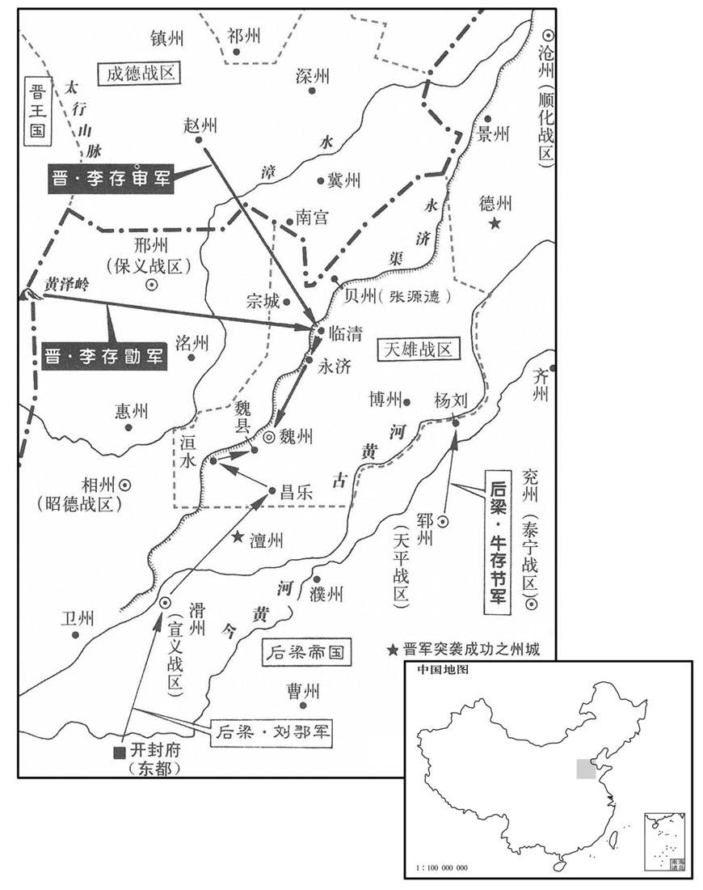
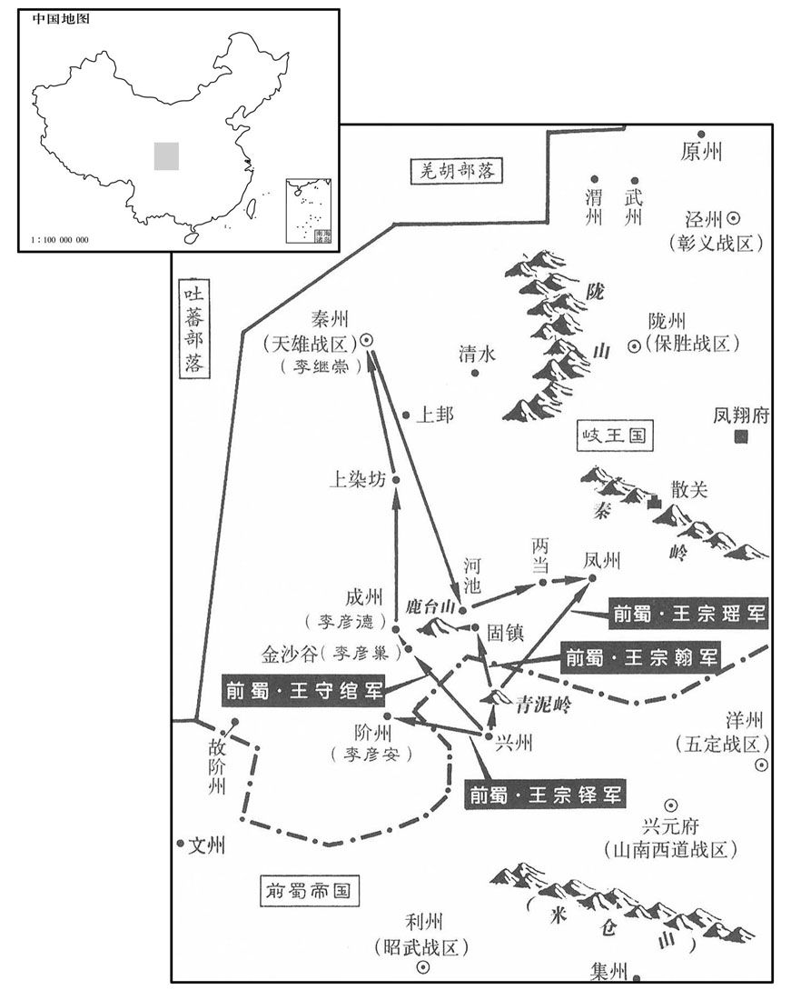
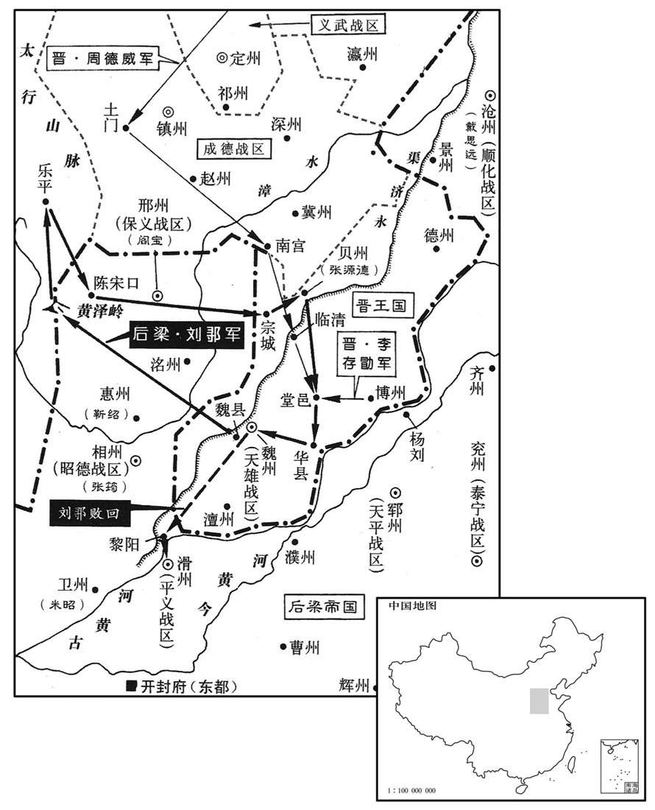
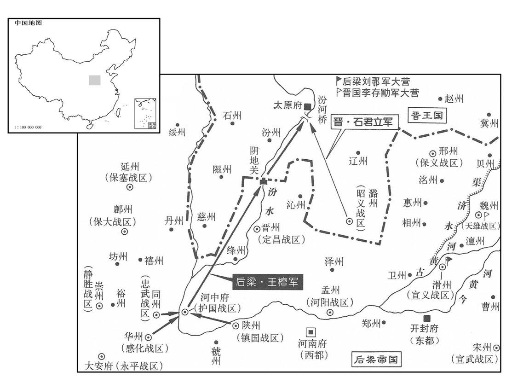
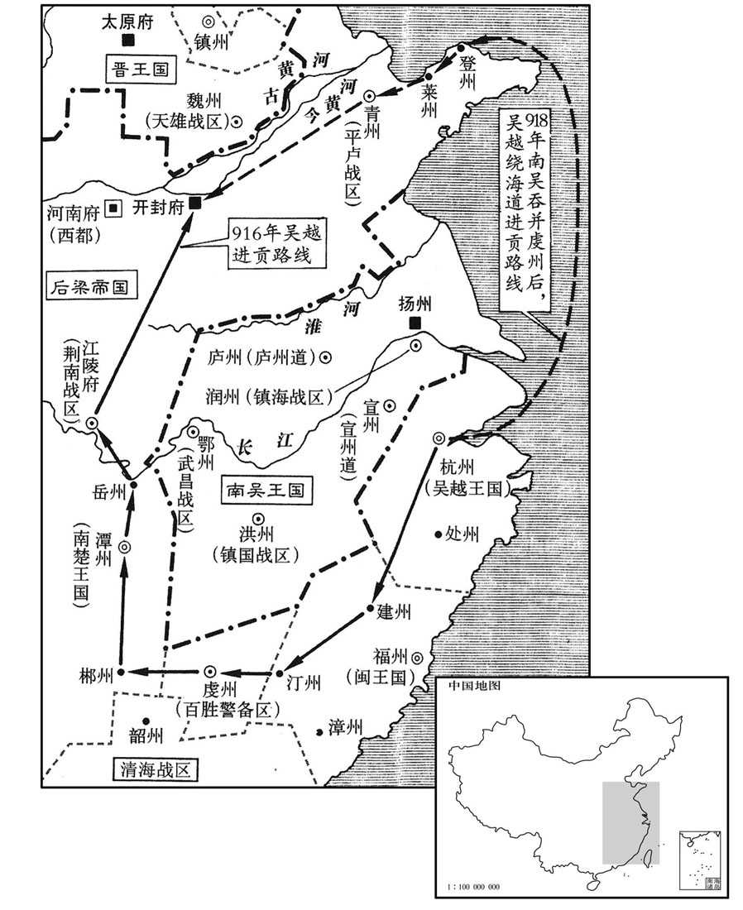
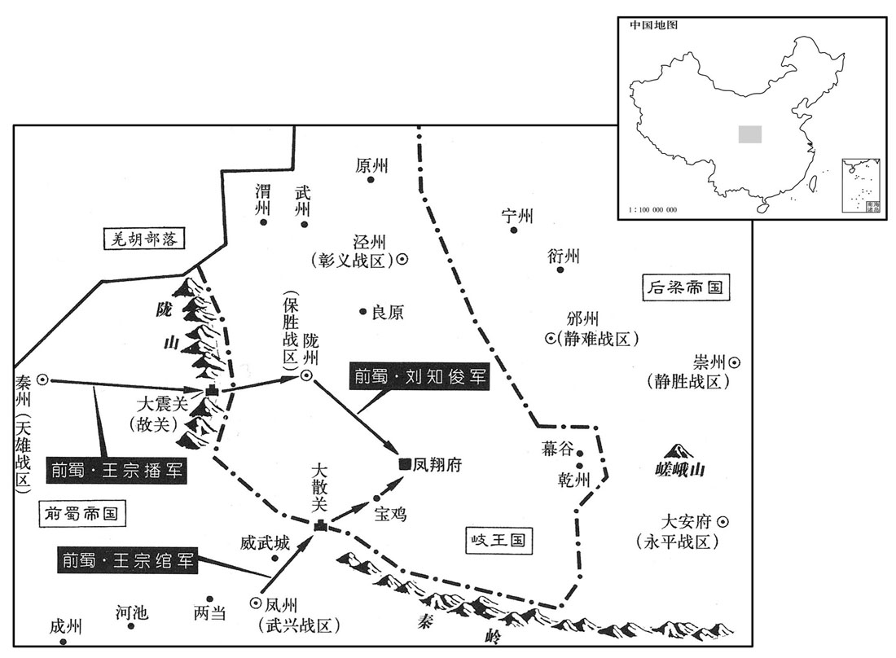
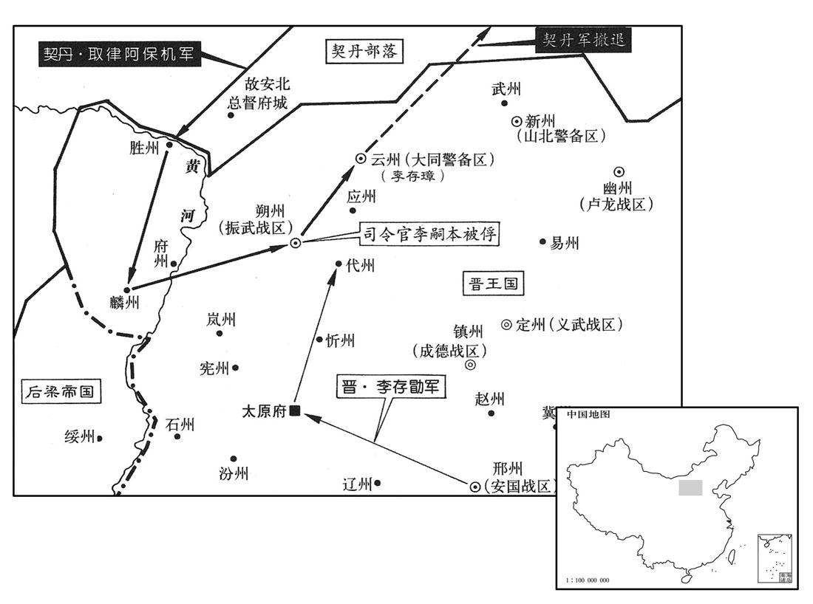
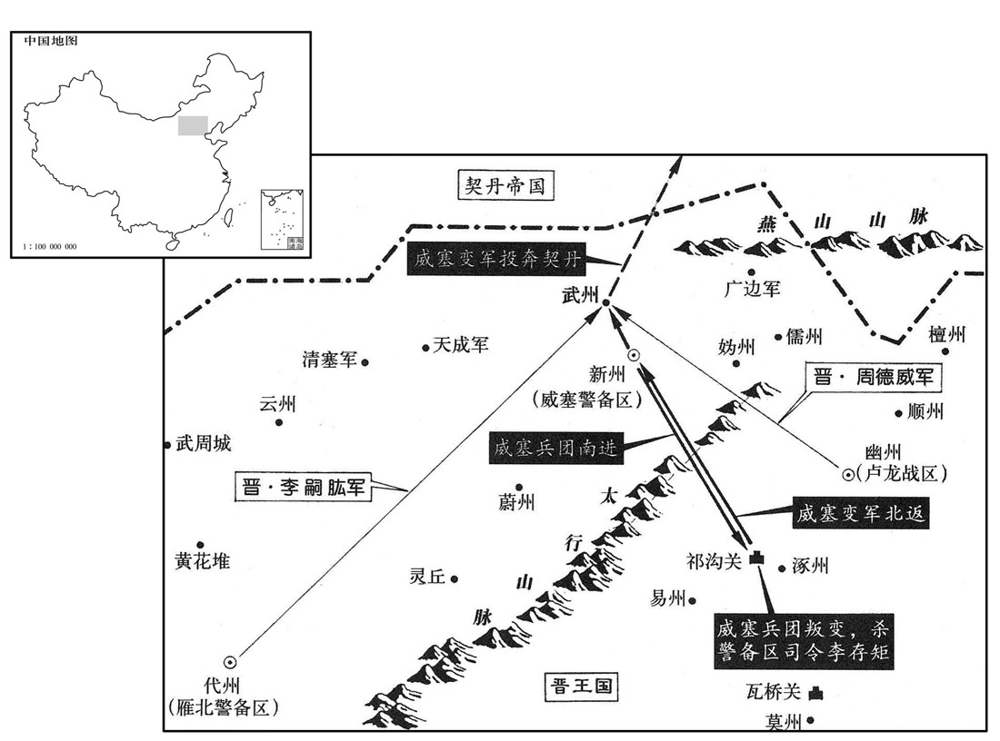

卷次与人物目录 / 卷269
资治通鉴 · 卷第二百六十九【后梁纪四】
公元913年至公元917年 · 原文、白话与胡三省注
本页按胡注本编排保存全卷内容。白话采用本站所据译本，未可靠对应的内容另列说明；事件标题用于定位，并非原书文字。
本卷共118段原文，118段有译文对应，0段缺译或待核对。
卷第二百六十九【后梁纪四】起昭阳作噩（癸酉）十二月，尽强圉赤奋若（丁丑）六月，凡三年有奇。
卷首原文与注释
均王上
公元913年 · 后梁均王干化三年
干化三年〔（癸酉、九一三）〕
本年事件索引（现代整理）
十二月，吴镇海节度使徐温、平卢节度使朱瑾帅诸将拒之，〔拒王景仁也。帅，读曰率。〕遇于赵步。〔赵步，濒淮津济之处，南直寿春紫金山。〕吴征兵未集，温以四千余人与景仁战，不胜而却。景仁引兵乘之，将及于隘，〔隘，乌介翻，险狭之处为隘。〕吴吏士皆失色，左骁卫大将军宛丘陈绍援枪大呼〔援，于元翻。呼，火故翻。〕曰：「诱敌太深，可以进矣。」〔诱，音酉。〕跃马还鬬，众随之，梁兵乃退。温拊其背曰：「非子之智勇，吾几困矣。」〔几，居依翻。〕赐之金帛，绍悉以分麾下。吴兵既集，复战于霍丘，梁兵大败；王景仁以数骑殿，吴人不敢逼。〔殿，丁练翻。王景仁本吴之名将，吴人素畏之，故不敢逼。〕梁之渡淮而南也，表其可涉之津；〔立表以记浅。〕霍丘守将朱景浮表于木，徙置深渊。〔朱景，霍丘土豪也，吴用以为将，守霍丘。浮表于木者，徙梁所立之表，其下接之以木，立诸深渊以误之。〕及梁兵败还，〔还，从宣翻。〕望表而涉，溺死者太半，吴人聚梁尸为京观于霍丘。〔观，古玩翻。〕
十二月，吴国镇海节度使徐温、平卢节度使朱瑾率领诸将抵御后梁王景仁，两军在赵步相遇。当时，吴国征集的士卒还未到齐，徐温率领着四千余士卒与王景仁交战。终因寡不敌众而战败退却。王景仁乘胜率兵追击，快追到险要的地方，吴国的官兵都吓得惊恐失色。这时，吴国的左骁卫大将军宛丘人陈绍举起枪来高声疾呼，说：“诱敌太深了，可以进攻了。”于是他跃上战马，回头还击后梁军，吴国的士卒也跟着他一起与后梁军作战，后梁军才撤退。事后徐温拍着陈绍的背说：“若不是你聪明勇敢，我们几乎就要陷入困境了。”于是赏赐给陈绍很多金帛，陈绍全部赏赐分给部下。吴国的军队征集起来以后，又与后梁军战于霍丘，结果后梁军大败，王景仁和几个骑兵走在队伍的后面，吴国的士卒不敢逼近。后梁军在渡过淮水向南撤退时，在水浅的渡津作了标志；吴军霍丘守将朱景将这些标志浮在木头上移到水深的地方。等到后梁军战败回逃的时候，都按照过河时设置的标志涉水渡河，结果被溺死的士卒有一半以上，吴国人把被溺死的后梁军尸体集中起来在霍丘封筑成高士家，以此来炫耀自己军队所取得的胜利。

本年形势与背景参考图
庚午，晋王以周德威为卢龙节度使，兼侍中，以李嗣本为振武节度使。〔先是，周德威以破夹寨之功帅振武，今以平燕之功徙帅卢龙，以李嗣本代帅振武。欧史义儿传，嗣本本鴈门张氏子。〕
庚午（初三），晋王李存勖任命周德威为卢龙节度使兼侍中，任命李嗣本为振武节度使。
燕主守光将奔沧州就刘守奇，〔刘守奇藉兵于梁以取沧州，事见上卷上年。〕涉寒，足肿，〔史照曰：释名曰：肿，锺也，寒热气聚也。〕且迷失道，至燕乐之境，〔燕乐县，后魏置，治白檀古城。唐长寿二年徙治新兴城，属檀州。宋白曰：燕乐、密云二县皆汉虒奚县地。乐，音洛。〕昼匿坑谷，数日不食，令妻祝氏乞食于田父张师造家。师造怪妇人异状，诘知守光处，〔诘，去吉翻。〕并其三子擒之。癸酉，晋王方宴，将吏擒守光适至，王语之曰：〔语，牛倨翻。〕「主人何避客之深邪！」并仁恭置之馆舍，以器服膳饮赐之。王命掌书记王缄草露布，缄不知故事，书之于布，遣人曳之。〔魏、晋以来，每战胜则书捷状，建之漆竿，使天下皆知之，谓之露布。露布者，暴白其事而布告天下，未尝书之于布而使人曳之也。文心雕龙曰：露布者，盖露皮不封，布诸观听也。〕
燕主刘守光被周德威击败后，将要向南投奔沧州刘守奇，由于步行过河，水寒冷，脚肿了，而且迷失了道路，行至燕乐县境内时，白天藏匿在谷之中，好几天都没有吃上饭，就让他的妻子祝氏到老农张师造家讨饭。老农张师造觉得刘守光的妻子祝氏形状很怪异，盘问得知刘守光的住处，于是连刘守光的三个儿子一并捉拿起来，癸酉（初六），晋王正要举行宴会时，将吏把刘守光押送刚刚到达，晋王对他们说：“主人为什么要这样畏避客人呢？”于是将刘仁恭和刘守光一并安置到客舍，并赐给他们衣食用具。随后晋王又命令掌管书牍记录的官员王缄起草露布，晓示天下。王缄不知露布的旧例，便把情况书写在布匹上，派人拉着。


晋王欲自云、代归，〔自幽州取山后路，历云、代等州至晋阳。〕赵王镕及王处直请由中山、真定趣井陉，〔王处直，王镕欲晋王取道中山、真定，各展迎贺之礼。趣，七喻翻。〕王从之。庚辰，晋王发幽州，刘仁恭父子皆荷校于露布之下。〔荷，下可翻，又音何。校，爻教翻。易曰：荷校灭耳。注云：校者，以木绞校者也，即械也；校者取其通名也。〕守光父母唾其面而骂之曰：「逆贼，破我家至此！」守光俛首而已。〔俛，音免。〕甲申，至定州，舍于关城。丙戌，晋王与王处直谒北岳庙；〔北岳庙在恒山之大茂山；恒山在定州曲阳县西北。〕是日，至行唐，〔行唐，汉南行唐县，后魏曰行唐，唐属镇州。九域志：在州北五十五里。〕赵王镕迎谒于路。
晋王打算经过云州、代州回晋阳，赵王王熔和王处直请求经由中山、真定，并取道井陉返回晋阳，晋王听从了他们的意见。庚辰（十三日），晋王从幽州出发，刘仁恭父子都戴着枷锁在露布之下。刘守光的母亲和父亲将唾沫唾在他的脸上并骂他说：“逆贼，把我的家败坏到这种地步！”刘守光只是低着头而已。甲申（十七日），行至定州，住在关口的城楼里面。丙戌（十九日），晋王和王处直拜谒北岳庙。这一天，行至行唐，赵王王熔在路上迎接谒见了晋王。

译本中未与胡注本可靠对应的内容
以下另列供核对版本差异，不并入胡注本正文。
译本所附古文
[1]春，正月，丁巳，晋周德威拔燕顺州。
译本白话
春季，正月丁巳（十四日），晋周德威攻克燕之顺州。
译本所附古文
[2]癸亥，郢王友朝享太庙；甲子，祀圜丘，大赦，改元凤历。
译本白话
癸亥（十二日），郢王朱友朝谒祭祀太庙。甲子（二十一日），祭天，实行大赦，改年号为凤历。
译本所附古文
[3]吴陈璋攻荆南，不克而还，荆南兵与楚兵会于江口以邀之；璋知之，舟二百艘骈为一列，夜过，二镇兵遽出追之，不能及。
译本白话
吴淮南节度副使陈璋进攻荆南，没有攻克就返回，荆南军队与楚兵在荆江口会合来拦击。陈璋知道情况，把二百艘船并列连接成一列，夜间过江，荆南、楚二镇军队急忙冲出追赶，没能追上。
译本所附古文
[4]晋周德威拔燕安远军，蓟州将成行言等降于晋。
译本白话
晋周德威攻克燕之安远军，蓟州将领成行言等向晋投降。
译本所附古文
[5]二月，壬午，蜀大赦。
译本白话
二月壬年（初九），前蜀实行大赦。
译本所附古文
[6]郢王友既得志，遽为荒淫，内外愤怒，友虽啖以金缯，终莫之附。驸马都尉赵岩，之子，太祖之婿也，左龙虎统军、侍卫亲军都指挥使袁象先，太祖之甥也。岩奉使至大梁，均王友贞密与之谋诛友，岩曰：“此事成败，在招讨杨令公耳。得其一言谕禁军，吾事立办。”均王乃遣腹心马慎交之魏州说杨师厚曰：“郢王篡弑，人望属在大梁，公若因而成之，此不世之功也。”且许事成之日赐犒军钱五十万缗。师厚与将佐谋之，曰：“方郢王弑逆，吾不能即讨；今君臣之分已定，无故改图，可乎？”或曰：“郢王亲弑君父，贼也；均王举兵复仇，义也。奉义讨贼，何君臣之有！彼若一朝破贼，公将何以自处乎？”师厚曰：“吾儿误计。”乃遣其将王舜贤至洛阳，阴与袁象先谋，遣招讨马步都虞候谯人朱汉宾将兵屯滑州为外应。赵岩归洛阳，亦与象先密定计。
译本白话
郢王朱友得志以后，马上变得荒淫无度，引起朝内外愤怒，朱友虽用金帛引诱，但始终没有人依附他。驸马都尉赵岩是赵的儿子，后梁太祖的女婿。左龙虎统军、侍卫亲军都指挥使袁象先是后梁太祖的外甥。赵岩奉命出使到大梁，均王朱友贞秘密地与他谋划杀死朱友，赵岩说：“这件事的成败，操在都招讨使杨师厚令公手中。得他一句话晓谕禁军，我的事马上就办。”均王朱友贞于是派遣心腹马慎交到魏州劝导杨师厚说：“郢王朱友杀父篡位，众望专注在大梁均王朱友贞身上，您如果能够因此成功，这是非凡的功勋啊。”并且答应事成之日赏赐给他犒劳将士的钱五十万缗。杨师厚与将佐商议这件事，说：“当郢王杀父叛逆的时候，我不能立即讨伐；现在君臣名份已定，无故改变主意，可以吗？”有人说：“郢王亲自杀死君父，是贼；均王发兵复仇，是正义的。尊奉正义，讨伐逆贼，有什么君臣之分！他们如果一旦打败逆贼，您将怎么安顿自己呢？”杨师厚说：“我几乎打错算盘。”于是派遣他的部将王舜贤到洛阳，暗中与左龙虎统军、侍卫亲军都指挥使袁象先商量，派遣招讨马步都虞候谯人朱汉宾率兵驻守滑州作为外应。驸马都尉赵岩返回洛阳，也与袁象先秘密制定计策。
友治龙骧军溃乱者，搜捕其党，获者族之，经年不已。时龙骧军有戍大梁者，友征之，均王因使人激怒其众曰：“天子以怀州屯兵叛，追汝辈欲尽坑之。”其众皆惧，莫知所为。丙戌，均王奏龙骧军疑惧，未肯前发。戊子，龙骧将校见均王，泣请可生之路，王曰：“先帝与汝辈三十余年征战，经营王业。今先帝尚为人所弑，汝辈安所逃死乎！”因出太祖画像示之而泣曰：“汝能自趣洛阳雪仇耻，则转祸为福矣。”众皆踊跃呼万岁，请兵仗，王给之。
译本所附古文
朱友惩治龙骧军内逃散作乱的人，搜捕他们的余党，逮住的灭族，经历一年而不停。当时龙骧军有戍守大梁的，朱友召他们回洛阳，均王朱友贞于是派人激怒他们说：“天子因戍守怀州的龙骧军叛变，追查你们打算全部活埋。”龙骧军的兵众都很害怕，不知道怎么办。丙戌（十三日），均王奏报大梁的龙骧军怀疑恐惧，不肯起程。戊子（十五日），龙骧军将校进见均王，流着泪请求指示生存的道路，均王说：“先帝与你们三十余年南征北战，筹划经营帝王事业。现在先帝尚且被人杀死，你们到何处能够逃脱死亡呢！”于是拿出后梁太祖的画像给他们看，并且流着泪说：“你们能够自己奔赴洛阳报仇雪耻，就转祸为福了。”龙骧军兵众跳跃高呼万岁，请求发给兵器。均王发给了他们。
译本白话
庚寅旦，袁象先等帅禁兵数千人突入宫中。友闻变，与妻张氏及冯廷谔趋北垣楼下，将逾城，自度不免，令廷谔先杀妻，后杀己，廷谔亦自刭。诸军十余万大掠都市，百司逃散，中书侍郎、同平章事杜晓、侍讲学士李皆为乱兵所杀，门下侍郎、同平章事于兢、宣政使李振被伤。至晡乃定。
庚寅（十七日）早晨，袁象先等率领禁军数千人冲入宫中。朱友听说兵变，与妻子张氏及冯廷谔跑到北垣墙楼下，将要越过城墙，自己估计不能免死，命令冯廷谔先把妻子张氏杀死，后杀死自己，冯廷谔也自杀。诸军十余万人大肆抢掠市中财物，百官逃散，中书侍郎、同平章事杜晓和侍讲学士李都被乱兵杀死，门下侍郎、同平章事于兢和宣政使李振被打伤。直到太阳落山才安定下来。
象先、岩赍传国宝诣大梁迎均王，王曰：“大梁国家创业之地，何必洛阳！”乃即帝位于大梁，复称乾化三年，追废友为庶人，复博王友文官爵。
袁象先和赵岩带着传国宝玺前往大梁迎接均王朱友贞，均王说：“大梁是国家创立基业的地方，何必到洛阳去！”于是，在东都大梁即帝位，又把年号改为乾化三年，追废朱友为平民，恢复博王朱友文的官爵。
译本所附古文
[7]丙申，晋李存晖攻燕檀州，刺史陈确以城降。
译本白话
丙申（二十三日），晋将李存晖率兵攻打燕之檀州，檀州刺史陈确献城投降。
译本所附古文
[8]蜀唐道袭自兴元罢归，复为枢密使。太子元膺廷疏道袭过恶，以为不应复典机要，蜀主不悦。庚子，以道袭为太子太保。
译本白话
前蜀唐道袭从兴元罢免回成都，复任枢密使。太子王元膺在朝廷上逐条分列唐道袭的过失罪恶，以为不应当再掌管国家机密要事，前蜀主王建不高兴。庚子（二十七日），任命唐道袭为太子太保。
译本所附古文
[9]三月，甲辰朔，晋周德威拔燕卢台军。
译本白话
三月，甲辰朔（初一），晋周德威夺取燕之芦台军。
译本所附古文
[10]丁未，帝更名；久之，又名。
译本白话
丁未（初四），后梁帝均王朱友贞更名为；很久以后，又改名为。
译本所附古文
[11]庚戌，加杨师厚兼中书令，赐爵邺王，赐诏不名，事无巨细必咨而后行。
译本白话
庚戌（初七），后梁加官杨师厚兼中书令，赐爵邺王，赐诏不称名，事无大小一定要先咨询过他然后施行。
译本所附古文
[12]帝遣使招抚朱友谦；友谦复称藩，奉梁年号。
译本白话
后梁帝派遣使者招抚朱友谦；朱友谦又称藩镇，尊奉梁朝年号。
译本所附古文
[13]丙辰，立皇弟友敬为康王。
译本白话
丙辰（十三日），后梁帝立皇弟朱友敬为康王。
译本所附古文
[14]乙丑，晋将刘光浚克古北口，燕居庸关使胡令圭等奔晋。
译本白话
乙丑（二十二日），晋将刘光浚攻克古北口，燕之居庸关使胡令圭等投奔晋。
译本所附古文
[15]戊辰，以保义留后戴思远为节度使，镇邢州。
译本白话
戊辰（二十五日），后梁帝任命保义留后戴思远为保义节度使，镇守邢州。
译本所附古文
[16]燕主守光命大将元行钦将骑七千，牧马于山北，募山北兵以应契丹；又以骑将高行为武州刺史，以为外援。晋李嗣源分兵徇山后八军，皆下之；晋王以其弟存矩为新州刺史总之。以燕纳降军使卢文进为裨将。李嗣源进攻武州，高行以城降。元行钦闻之，引兵攻行；行使其弟行周质于晋军以求救，李嗣源引兵救之，行钦解围去。嗣源与行周追至广边军，凡八战，行钦力屈而降；嗣源爱其骁勇，养以为子。嗣源进攻儒州，拔之，以行为代州刺史。行周留事嗣源，常与嗣源假子从珂分将牙兵以从。从珂母魏氏，镇州人，先适王氏，生从珂，嗣源从晋王克用战河北，得魏氏，以为妾，故从珂为嗣源子，及长，以勇健知名，嗣源爱之。
译本白话
燕主刘守光命大将元行钦率领七千骑兵，在山北牧马，召募山北军队来接应契丹；又任命骑兵将领高行为武州刺史，以为外援。晋将李嗣源分兵巡行山后八军，全部攻克；晋王任命他的弟弟存矩为新州刺史总理山后八军。委任燕纳降军使卢文进为副将。李嗣源进攻武州，高行献城投降。元行钦听到高行投降，带兵攻打高行；高行派他的弟弟高行周到晋军营中作为人质，请求发兵援救。李嗣源带兵救援高行，元行钦解围离去。李嗣源与高行周追赶到广边军，总共打了八仗，元行钦力尽投降。李嗣源喜爱元行钦勇猛善战，收为养子。李嗣源进攻儒州，夺取州城，委任高行为代州刺史。高行周留下侍奉李嗣源，常与李嗣源养子李从珂分率牙兵随从左右。李从珂的母亲魏氏是镇州人，先嫁与王氏，生从珂，李嗣源随从晋王李克用在河北作战，得到魏氏，收为妾，所以从珂成为李嗣源的儿子；李从珂长大以后，以勇健善战知名，李嗣源非常喜欢他。
译本所附古文
[17]吴行营招讨使李涛帅众二万出千秋岭，攻吴越衣锦军。吴越王以其子湖州刺史传为北面应援都指挥使以救之，睦州刺史传为招讨收复都指挥使，将水军攻吴东洲以分其兵势。
译本白话
吴行营招讨使李涛率领二万军队从千秋岭出来，进攻吴越衣锦军。吴越王钱任命他的儿子湖州刺史钱传为北面应援都指挥使，率兵前去救援；睦州刺史钱传为招讨收复都指挥使，率领水军进攻吴东洲以分散吴军的兵势。
译本所附古文
[18]夏，四月，癸未，以袁象先领镇南节度使、同平章事。
译本白话
夏季，四月，癸未（十一日），后梁帝任命袁象先兼镇南节度使、同平章事。
译本所附古文
[19]晋周德威进军逼幽州南门，壬辰，燕主守光遣使致书于德威以请和，语甚卑而哀。德威曰：“大燕皇帝尚未郊天，何雌伏如是邪！予受命讨有罪者，结盟继好，非所闻也。”不答书。守光惧，复遣人祈哀，德威乃以闻于晋王。
译本白话
晋周德威率领大军进逼幽州南门，壬辰（二十日），燕主刘守光派遣使者给周德威送去书信，请求和解，言辞卑下悲哀。周德威说：“大燕皇帝还没有到南郊祭天，怎么屈居人下如此呢！我受天命讨伐有罪的人，结成同盟，继续友好，不是我所要听到的。”没有复信。刘守光畏惧，又派人前去祈求怜悯，周德威这才把此事向晋王报告。
译本所附古文
[20]千秋岭道险狭，钱传使人伐木以断吴军之后而击之，吴军大败，虏李涛及士卒三千余人以归。
译本白话
千秋岭道路险峻狭窄，钱传派人砍伐树木截断吴军的后路，然后发动攻击，把吴军打得大败，俘虏李涛及甲士步卒三千余人，带回杭州。
译本所附古文
[21]已亥，晋刘光浚拔燕平州，执刺史张在吉。五月，光浚攻营州，刺史杨靖降。
译本白话
已亥（二十七日），晋将刘光浚攻克燕之平州，捉住平州刺史张在吉。五月，刘光浚率兵进攻营州，营州刺史杨靖投降。
译本所附古文
[22]乙巳，蜀主以兵部尚书王锴为中书侍郎、同平章事。
译本白话
乙巳（初四），前蜀主王建任命兵部尚书王锴为中书侍郎、同平章事。
译本所附古文
[23]杨师厚与刘守奇将汴、滑、徐、兖、魏、博、邢、之兵十万大掠赵境，师厚自柏乡入攻土门，趣赵州，守奇自贝州入趣冀州，所过焚掠。庚戌，师厚至镇州，营于南门外，燔其关城。壬子，师厚自九门退军下博，守奇引兵与师厚会攻下博，拔之。晋将李存审、史建瑭戍赵州，后少，赵王告急于周德威。德威遣骑将李绍衡会赵将王德明同拒梁军。师厚、守奇自弓高渡御河而东，逼沧州，张万进惧，请迁于河南；师厚表徙万进镇青州，以守奇为顺化节度使。
译本白话
杨师厚与刘守奇率领汴州、滑州、徐州、兖州、魏州、博州、邢州、州的十万军队大肆虏掠赵地，杨师厚自柏乡进入攻击土门，指向赵州，刘守奇自贝州进入直指冀州，在南门外扎营，焚烧镇州城关厢。壬子（十一日），杨师厚自九门退兵到下博，刘守奇带兵与杨师厚会同进攻下博，将城夺取。晋李存审、史建瑭戍守赵州，兵少，赵王向周德威告急。周德威派遣骑将李绍衡会同赵将王德明一起抵御后梁军。杨师厚、刘守奇自弓高渡过御河向东进发，逼近沧州，张万进畏惧，请求迁往河南；杨师厚上表请调张万进镇守青州，任命刘守奇为顺化节度使。
译本所附古文
[24]吴遣宣州副指挥使花虔将兵会广德镇遏使涡信屯广德，将复寇衣锦军。吴越钱传就攻之。
译本白话
吴派遣宣州副指挥使花虔率领军队会同广德镇遏使涡信驻防广德，将要再次侵犯衣锦军。吴越钱传率兵前去攻打。
译本所附古文
[25]六月，壬申朔，晋王遣张承业诣幽州，与周德威议军事。
译本白话
六月，壬申朔（初一），晋王派遣张承业前往幽州，与周德威商议军事。
译本所附古文
[26]丙子，蜀主以道士杜光庭为金紫光禄大夫、左谏议大夫，封蔡国公，进号广成先生。光庭博学善属文，蜀主重之，颇与议政事。
译本白话
丙子（初五），前蜀主王建任命道士杜光庭为金紫光禄大夫、左谏议大夫，封蔡国公，进号广成先生。杜光庭学识渊搏，长于写作，王建推崇他，常与他商议政事。
译本所附古文
[27]吴越钱传拔广德，虏花虔、涡信以归。
译本白话
吴越钱传率兵攻克广德，俘虏花虔、涡信回归。
译本所附古文
[28]戊子，以张万进为平卢节度使。
译本白话
戊子（十七日），后梁任命张万进为平卢节度使。
译本所附古文
[29]辛卯，燕主守光遣使诣张承业，请以城降；承业以其无信，不许。
译本白话
辛卯（二十日），燕主刘守光派遣使者劝说张承业，请献城投降；张承业因他没有信用，不答应。
译本所附古文
[30]蜀太子元膺，喙龅齿，目视不正，而警敏知书，善骑射，性狷急猜忍。蜀主命杜光庭选纯静有德者使侍东官，光庭荐儒者许寂、徐简夫，太子未尝与之交言，日与乐工群小嬉戏无度，僚属英敢谏。
译本白话
前蜀太子王元膺，生就了一张公猪嘴，牙齿外露，眼睛斜视，但是机警灵敏，通晓诗书，善于骑马射箭，性情褊狭急躁，多疑残忍。蜀主王建命杜光庭选择学问纯正、性情安详、有德行的人，让他们侍奉太子。杜光庭推荐儒生许寂、徐简夫，太子与他们未曾交淡过，每天与乐工下人嬉戏玩耍，没有节制，属官没有人敢于劝谏。
秋，七月，蜀主将以七夕出游。丙午，太子召诸王大臣宴饮，集王宗翰、内枢密使潘峭、翰林学士承旨高阳毛文锡不至，太子怒曰：“集王不来，必峭与文锡离间也。”大昌军使徐瑶、常谦，素为太子所亲信，酒行，屡目少保唐道袭，道袭惧而起。丁未旦，太子入白蜀主曰：“潘峭、毛文锡离间兄弟。”蜀主怒，命贬逐峭、文锡，以前武泰节度使兼侍中潘炕为内枢密使。
秋季，七月，王建将要在七夕出去游玩。丙午（初六），太子王元膺召集诸王及文武大臣在一起设宴饮酒，集王王宗翰、内枢密使潘峭、翰林学士承旨高阳人毛文锡没有到，太子勃然大怒，说：“集王不来，一定是潘峭与毛文锡从中挑拨离间。”大昌军使徐瑶、常谦，一向为太子所亲近信任，依次斟酒劝饮之间，多次瞪少保唐道袭，唐道袭畏惧而起身。丁未（初七）早晨，太子入宫禀报王建说：“潘峭、毛文锡挑拨离间我们兄弟。”王建大怒，命将潘峭、毛文锡贬官放逐，任命前武泰节度使兼侍中潘炕为内枢密使。
太子出，道袭入，蜀主以其事告之，道袭曰：“太子谋作乱，欲召诸将、诸王，以兵锢之，然后举事耳。”蜀主疑焉，遂不出；道袭请召屯营兵入宿卫，许之。内外戒严。
译本所附古文
太子出宫以后，唐道袭入宫进见，王建把刚才这事告诉他，唐道袭说：“太子图谋作乱，想要召集诸将、诸王，用兵禁锢他们，然后发动叛乱罢了。”王建产生怀疑，于是七夕不出去游玩了。唐道袭请召驻防营兵进宫值宿警卫，王建应允。成都城内外戒备森严。 太子初不为备，闻道袭召兵，乃以天武甲士自卫，捕潘峭、毛文锡至，之几死，囚诸东宫；又捕成都尹潘峤，囚诸得贤门。戊申，徐瑶、常谦与怀胜军使严等各帅所部兵奉太子攻道袭。至清风楼，道袭引屯营兵出拒战；道袭中流矢，逐至城西，斩之。杀屯营兵甚众，中外惊扰。 太子王元膺开始没有做准备，听说唐道袭召集军队，于是带领天武甲士进行自卫，逮捕潘峭、毛文锡，打他们几乎至死，把他们囚禁在东宫里；又逮捕成都尹潘峤，把他囚禁在得贤门。戊申（初八），大昌军使徐瑶、常谦与怀胜军使严等各率自己所属的军队随从太子进攻唐道袭。到达清风楼，唐道袭带领驻防营兵出来抵御战斗。唐道袭被乱箭射中。追赶到城西，把唐道袭杀死，并杀死驻防营兵很多，成都城内外惊慌扰乱。
译本白话
潘炕言于蜀主曰：“太子与唐道袭争权耳，无他志也。陛下宜面谕大臣以安社稷。”蜀主乃召兼中书令王宗侃、王宗贺、前利州团练使王宗鲁，使发兵讨为乱者徐瑶、常谦等。宗侃等陈于西球场门，兼侍中王宗黯自大安门梯城而入，与瑶、谦战于会同殿前，杀数十人。瑶死，谦与太子奔龙跃池，匿于舰中。己酉。太子出就舟人丐食，舟人以告蜀主，亟遣集王宗翰往慰抚之；比至，太子已为卫士所杀。蜀主疑宗翰杀之，大恸不已。左右恐事变，会张格呈慰谕军民榜，读至“不行斧钺之诛，将误社稷之计”，蜀主收涕曰：“朕何敢以私害公！”于是下诏废太子元膺为庶人。宗翰奏诛手刃太子者，元膺左右会诛死者数十人，贬窜者甚众。
内枢密使潘炕向前蜀主王建进言说：“太子只是与唐道袭争夺权力罢了，没有其他心思。陛下应该当面告谕诸王文武大臣来安定国家。”王建于是召兼中书令王宗侃、王宗贺及前利州团练使王宗鲁，命他们发兵讨伐发动叛乱的徐瑶、常谦等人。王宗侃等在西球场门列阵，兼侍中王宗黯自大安门攀梯登城，进入宫内，与徐瑶、常谦在会同殿前面进行战斗，杀死数十人。徐瑶战死，常谦与太子逃奔龙跃池，隐藏在战船中。己酉（初九）早晨，太子从战船中出来，向船夫讨饭吃，船夫把这事报告王建，王建急忙派遣集王王宗翰前去慰问安抚。来到龙跃池时，太子已被卫士杀死。王建怀疑是王宗翰杀了太子，痛哭不止。官员们担心发生事变，恰巧同平章事张格进呈“慰谕军民”，读到“不对悖逆作乱的人实行杀戮，将要贻误国家的大计”时，王建止住涕泪说：“朕怎么敢因私情危害国家公事！”于是，颁布诏书，废黜太子王元膺为平民。王宗翰奏请把亲手杀死太子的人斩首，结果王元膺左右有几十个人被杀，降职流放的人很多。
庚戌，赠唐道袭太师，谥忠壮；复以潘峭为枢密使。
庚戌（初十），前蜀主追赠唐道袭为太师，谥号忠壮，又任命潘峭为枢密使。
译本所附古文
[31]甲子，晋五院军使拔莫州，擒燕将毕元福。八月，乙亥，李信拔瀛州。
译本白话
甲子（二十四日），晋五院军使李信攻克莫州，生擒燕将毕元福。八月乙亥（初六），李信攻克瀛州。
译本所附古文
[32]赐高季昌爵勃海王。
译本白话
后梁帝赐高季昌爵为勃海王。
译本所附古文
[33]晋王与赵王熔会于天长。
译本白话
晋王与赵王王熔在天长会见。
译本所附古文
[34]楚宁远节度使姚彦章将水军侵吴鄂州，吴以池州团练使吕师造为水陆行营应援使，未至，楚兵引去。
译本白话
楚宁远节度使姚彦章率领水军侵犯吴鄂州，吴任命池州团练使吕师造为水陆行营应援使，还没有到达，楚兵退走。
译本所附古文
[35]九月，甲辰，以御史大夫姚洎为中书侍郎、同平章事。
译本白话
九月甲辰（初五），后梁任命御史大夫姚洎为中书侍郎、同平章事。
译本所附古文
[36]燕主守光引兵夜出，复取顺州。
译本白话
燕主刘守光带领军队在夜里出击，向晋夺回顺州。
译本所附古文
[37]吴越王遣其子传、传及大同节度使传瑛攻吴常州，营于潘葑。徐温曰：“浙人轻而怯，”帅诸将倍道赴之。至无锡，黑云都将陈言于温曰：“彼谓吾远来罢倦，未能决战，请以所部乘其无备击之。”乃自他道出敌后，温以大军当其前，夹攻之，吴越大败，斩获甚众。
译本白话
吴越王钱派遣他的儿子钱传、钱传及大同节度使钱传瑛进攻吴常州，在无锡县潘葑扎营。徐温说：“浙人轻浮而且怯懦。”率领诸将日夜兼程赶路奔赴常州。到达无锡时，黑云都将陈向徐温进言说：“他们以为我军远道而来一定疲乏劳倦，不能进行决战，请准带领部下乘他们没有戒备攻击他们。”于是从别的道路绕到敌人后面，徐温带领大军挡在吴越军队的前面，前后夹攻，把吴越军打得大败，杀死俘获吴越兵很多。
译本所附古文
[38]高季昌造战舰五百艘，治城堑，缮器械，为攻守之具，招聚亡命，交通吴、蜀，朝廷浸不能制。
译本白话
荆南节度使高季昌制造战船五百艘，修挖城垣壕沟，整治铠甲器械，作为进攻守卫的工具，招集逃亡在外的人，交结吴、蜀，后梁朝廷渐渐不能控制。
译本所附古文
[39]冬，十月，己巳朔，燕主守光帅众五千夜出，将入檀州；庚午，周德威自涿州引兵邀击，大破之。守光以百余骑逃归幽州，其将卒降者相继。
译本白话
冬季，十月己巳朔（初一），燕主刘守光率领五千兵众在夜里出发，将要进入檀州；庚午（初二），周德威自涿州带兵拦击，把燕兵打得大败。刘守光带领一百多骑兵逃回幽州，他的将领兵卒投降的接连不断。
译本所附古文
[40]蜀潘炕屡请立太子，蜀主以雅王宗辂类己，信王宗杰才敏，欲择一人立之。郑王宗衍最幼，其母徐贤妃有宠，欲立其子，使飞龙使唐文讽张格上表请立宗衍。格夜以表示功臣宗王侃等，诈云受密旨，众皆署名。蜀主令相者视诸子，亦希旨言郑王相最贵。蜀主以为众人实欲立宗衍，不得已许之，曰：“宗衍幼懦，能堪其任乎”甲午，立宗衍为太子。受册毕，潘炕以朝廷无事，称疾请老，蜀主不许；涕泣固请，乃许之。国有大疑，常遣使就第问之。
译本白话
前蜀潘炕屡次请求立太子。前蜀主王建认为雅王王宗辂很像自己，信王王宗杰才思敏捷，想要选择一人立为太子。郑王王宗衍年龄最小，他的母亲徐贤妃深受蜀王宠爱，想要立自己的儿子，派飞龙使唐文示意同平章事张格上表请立王宗衍。张格在夜里把写好的表章给功臣王宗侃等看。欺骗他们说是承受了蜀主的密旨，众人都署了名。前蜀主让相面的人观察各个儿子的面貌，相面人也迎合所谓密旨说郑王相貌最尊贵。前蜀主以为众人确实想要立王宗衍为太子，不得已答应了他们，说：“王宗衍年幼懦弱，能够胜任他的职务吗？”甲午（二十六日），立王宗衍为太子。受册完毕，潘炕以朝廷没有什么事情，声称有病，请求告老辞官，王建不准许；潘炕流着眼泪坚决请求，才答应了他。国家有了大的疑难事情，常派遣使者到他家里请教。
译本所附古文
[41]岭南节度使刘岩求婚于楚，楚王许以女妻之。
译本白话
岭南节度使刘岩向楚王求婚，楚王马殷应允把女儿嫁给他。
译本所附古文
[42]卢龙巡属皆入于晋，燕主守光独守幽州城，求援于契丹；契丹以其无信，竟不救。守光屡请降于晋，晋人疑其诈，终不许。至是，守光登城谓周德威曰：“俟晋王至，吾则开门泥首听命。”德威使白晋王。十一月，甲辰，晋王以监军张承业权知军府事，自诣幽州，辛酉，单骑抵城下，谓守光曰：“朱温篡逆，余本与公合河朔五镇之兵兴复唐祚。公谋之不臧，乃效彼狂僭。镇、定二帅皆俯首事公，而公曾不之恤，是以有今日之役。丈夫成败须决所向，公将何如？”守光曰：“今日俎上肉耳，惟王所裁。”王悯之，与折弓矢为誓，曰：“但出相见，保无他也。”守光辞以他日。
译本白话
卢龙节度使的管辖属地都被晋占有，燕主刘守光独自据守幽州城，向契丹请求救援。契丹认为他没有信用，终于没有救援。刘守光多次向晋请求归降，晋人怀疑他欺诈，始终不接受他投降。到这时，刘守光登上城楼，对周德威说：“等晋王到了，我就打开城门，伏首听命。”周德威派遣使者禀报晋王。十一月甲辰（初六），晋王任命监军张承业暂且主持军府事务，自己亲往幽州。辛酉（二十三日），晋王单骑到达幽州城下，对刘守光说：“朱温篡唐叛逆，我本想与您会合河朔五镇的军队共同兴复唐室的国运。您图谋不善，竟然效法朱温狂妄僭越。镇州王熔、定州王处直二帅，都驯服恭顺地侍奉您，然而您却从来不体恤他们，所以才有今天这场战斗。男子汉无论成功还是失败，必须决定去向，您将要怎么办？”刘守光说：“今天我是砧板上的肉罢了，只听大王裁决。”晋王怜悯刘守光，与他折断弓箭起誓，说：“只要您出城相见，我保证没有别的事情。”刘守光用改换他日来推托。
先是，守光爱将李小喜多赞成守光之恶，言听计从，权倾境内。至是，守光将出降，小喜止之。是夕，小喜逾城诣晋军，且言城中力竭。壬戌，晋王督诸军四面攻城，克之，擒刘仁恭及其妻妾，守光帅妻子亡去。癸亥，晋王入幽州。
在这以前，刘守光的爱将李小喜多佐助促成刘守光的恶行，刘守光对李小喜言听计从，李小喜的权势倾动境内。到这个时候，刘守光将要出城投降，李小喜止住了他。这天晚上，李小喜越过城墙，前往晋军投降，并且说幽州城内已经力量用尽。壬戌（二十四日），晋王李存勖统率诸军从四面同时攻城，夺取了幽州城，擒获刘仁恭及他的妻妾，刘守光带着妻子儿女逃走。癸亥（二十王日），晋王进入幽州。
译本所附古文
[43]以宁国节度使王景仁为淮南西北行营招讨应接使，将兵万余侵庐、寿。
译本白话
后梁任命宁国节度使王景仁为淮南西北行营招讨应接使，率领军队一万余人进攻庐州、寿州。
公元914年 · 后梁均王干化四年
四年〔（甲戌，九一四）〕
本年事件索引（现代整理）
- 赵王王镕赴李存勖行帐祝寿，李存勖令刘仁恭父子解械同席
- 王建命太子王元膺判六军并开设崇勋府
- 李存勖押刘仁恭父子至晋阳，斩刘守光及李小喜并遣刘仁恭就戮
- 王镕与王处直推举李存勖为尚书令，李存勖受命开府置行台
- 高季昌率军攻蜀夔州，遭张武等击退并损失惨重
- 梁廷因岐人侵扰，调康怀英镇守长安
- 前蜀将镇江军迁驻夔州
- 于兢因私下调补军校被罢相并贬官
- 袁州刺史刘崇景叛吴归楚，楚军援助并遭吴军讨伐
- 许德勋派王环乘夜风袭取黄州，俘吴刺史马邺而还
- 韩逊去世，军中推其子韩洙继任并获梁廷任命
- 柴再用等在万胜冈击败刘崇景与许贞，吴收复袁州
- 李存勖会合赵王王镕及周德威攻邢州，遭杨师厚阻击后退兵
- 王宗训贪暴擅离黔州，王建将其殴杀并改任潘峭
- 毛文锡劝王建勿决堰淹江陵百姓，王建遂停止计划
- 梁廷任朱友璋为武宁节度使，王殷拒受代而叛归吴国
- 前蜀军多次击败南诏，迫使南诏军渡河溺亡，王建令其收兵
- 前蜀王崇铎等攻取岐国阶州、固镇及多处寨堡
- 李继徽被其子李彦鲁毒死，李彦鲁自领静难军
春，正月，戊戌朔，赵王镕诣晋王行帐上寿置酒。镕愿识刘太师面，〔上，时掌翻。刘守光既囚其父仁恭，请于梁，以太师致仕，故王镕因而称之。〕晋王命吏脱仁恭及守光械，引就席同宴；镕答其拜，又以衣服鞍马酒馔赠之。〔馔，雏恋翻，又雏晥翻。〕己亥，晋王与镕畋于行唐之西，镕送〔【章：十二行本「送」下有「至」字；乙十一行本同；孔本同；张校同。】〕境上而别。
春季，正月，戊戍朔（初一），赵王王熔到晋王的军帐中为晋王上寿敬酒。王熔希望能见刘太师一面，晋王命令看守刘仁恭、刘守光的官吏卸掉刘仁恭、刘守光所戴的枷械，并把他们领到帐中同宴，王熔回拜了他们，又赠送给他们衣服、鞍马、酒馔。已亥（初二），晋王和王熔在行唐的西面打猎，随后王熔把晋王送到边境上才分别。
丙子，〔【张：「子」作「午」。】〕蜀主命太子判六军，开崇勋府，置僚属，后更谓之天策府。〔更，工衡翻。〕
丙午（二十一日），前蜀主王建命令太子元膺判管六军，始建崇勋府，设置僚属，后来改称为天策府。
壬子，晋王以练膤刘仁恭父子，凯歌入于晋阳，〔膤，充夜翻，絷缚之也。战胜得国而归，故奏凯歌。〕丙辰，献于太庙，自临斩刘守光。守光呼曰：「守光死不恨，〔呼，火故翻。〕然教守光不降者，李小喜也。」〔事见上卷上年。〕王召小喜证之，小喜瞋目叱守光曰：〔瞋，昌真翻。〕「汝内乱禽兽行，亦我教邪！」〔行，下孟翻。〕王怒其无礼，先斩之。〔怒其无礼于旧君也。〕守光曰：「守光善骑射，王欲成霸业，何不留之使自效！」其二妻李氏、祝氏让日之曰：〔让，责也。〕「皇帝，事已如此，生亦何益！」〔【章：十二行本「益」下有「妾请先死」四字；乙十一行本同；孔本同；张校同；退斋校同。】〕即伸颈就戮。守光至死号泣哀祈不已。〔史言刘守光畏死，妇人之不若。号，户高翻。〕王命节度副使卢汝弼等械仁恭至代州，刺其心血以祭先王墓，然后斩之。〔以刘仁恭叛其父也。晋王葬其先王于代州鴈门县，后名为建极陵。刺，七亦翻。〕
壬子（十五日），晋王用白绢捆绑着刘仁恭父子，高奏凯歌进入了晋阳城。丙辰（十九日），晋王将俘虏刘仁父子献于太庙，并亲临刑场斩杀刘守光。临刑前刘守光高声呼喊说：“我刘守光死而无恨，然而教我刘守光不降服的人是李小喜。”晋王把李小喜召来证明刘守光的话是否事实，李小喜怒目斥骂刘守光说：“你乱伦的禽兽行为也是我教的吗？”晋王对他出言无礼的行为十分生气，于是先斩杀了李小喜。刘守光说：“我刘守光善于骑马射箭，大王要成功霸业，为什么不留下我，让我为您效劳呢？”刘守光的两个妻子李氏和祝氏在一旁责备地说：“皇上，事已如此，活着又有什么好处呢？”随即伸出脖子接受砍戮。刘守光至死都不停地号泣求饶。晋王命令节度副使卢汝弼等给刘仁恭戴上枷锁。押送到代州，刺取了他的心血祭祀了先王李克用陵墓，然后将他斩杀。
或说赵王镕曰：〔说，式芮翻。〕「大王所称尚书令，乃梁官也，大王既与梁为雠，不当称其官。且自太宗践阼已来，无敢当其名者。〔唐太宗自尚书令即帝位，后之臣下率不敢当其名；唐之将亡，始以授藩帅。〕今晋王为盟主，勋高位卑，不若以尚书令让之。」〔让，逊也。〕镕曰「善！」乃与王处直各遣使推晋王为尚书令，晋王三让，然后受之，始开府置行台如太宗故事。〔唐太宗置行台事见高祖纪。〕
有人劝赵王王熔说：“大王所称尚书令是梁国的官名，大王既然与梁国为仇敌，就不应当再用梁国的官名，况且自从唐太宗登位以来，没有敢称这种官名的。现在晋王为盟主，功高位低，不如用尚书令这个官位来推崇他。”王熔说：“很对。”于是与王处直各自派一些人去推举晋王为尚书令，晋王再三辞让，最后才接受了，并和过去的唐太宗一样，开建府署，设置行台。
高季昌以蜀夔、万、忠、涪四州旧隶荆南，兴兵取之，〔涪，音浮。〕先以水军攻夔州。时镇江节度使兼侍中嘉王宗寿镇忠州，〔蜀置镇江军节度，领夔、忠、万三州。〕夔州刺史王成先请甲，宗寿但以白布袍给之。成先师之逆战，〔帅，读曰率。〕季昌纵火船焚蜀浮桥，招讨副使张武举铁焴拒之，〔唐昭宗天佑元年，张武以铁焴锁峡。焴，户登翻。〕船不得进。会风反，荆南兵焚溺死者甚众。〔乘顺风以纵火船，风反故自焚。〕季昌乘战舰，〔舰，户黯翻。〕蒙以牛革，飞石中之，折其尾，〔中，竹仲翻。折，而设翻。〕季昌易小舟而遁。荆南兵大败，俘斩五千级。成先密遣人奏宗寿不给甲之状，宗寿获之，召先，斩之。
高季昌因为前蜀的夔州、万州、忠州、涪州四州过去隶属荆南，打算用武力来夺取这些地方。一开始用水军攻打夔州。当时前蜀镇江节度使兼侍中嘉王王宗寿镇守忠州，夔州刺史王成先请求率领甲士作战，王宗寿只把穿白布袍的士卒配备给他。王成先率领这些白袍士卒迎战高季昌，高季昌放出火船焚烧了前蜀的浮桥，前蜀招讨副使张武架起铁索桥来阻拦高季昌的火船，结果火船无法通过。这时正好遇上风向调转，荆南高季昌的部队被火烧死和淹死的士卒很多。高季昌改乘战船逃跑，并给船蒙上牛皮，但被飞石击中，船尾被砸断，高季昌又改乘小船逃跑。在这次战役中，荆南兵大败，被俘虏和斩杀的共有五千人左右。夔州刺史王成先秘密派人向前蜀主奏告王宗寿不配备给戴甲士卒的情况，结果被王宗寿获知，于是召见王成先，并斩杀了他。
帝以岐人数为寇，〔数，所角翻。〕二月，〔【章：十二行本「月」下有「甲戌」二字；乙十一行本同；孔本同；张校同；退斋校同。】〕徙感化节度使康怀英为永平节度使，镇长安。〔感化军，陕州。梁初徙佑国军于长安，寻改为永平军。〕怀英即怀贞也，避帝名改焉。
后梁帝因为岐人曾多次来侵犯，二月，甲戌（初七），调感化节度使康怀英为永平节度使，镇守长安。康怀英即康怀贞，因为避讳后梁帝均王朱友贞的名字而改为康怀英。
夏，四月，丙子，蜀主徙镇江军治夔州。
夏季，四月丙子（初十），前蜀主王建调镇江军去治理夔州。
丁丑，司空兼门下侍郎、同平章事于兢坐挟私迁补军校，〔校，户教翻。〕罢为工部侍郎，再贬莱州司马。
丁丑（十一日），司空兼门下侍郎、同平章事于兢因为犯了徇私迁补军校的罪，降为工部侍郎，后来又贬任莱州司马。
吴袁州刺史刘崇景叛，附于楚。崇景，威之子也。〔刘威与杨行密同起于合肥，有战功，历方镇。〕楚将许贞将万人援之，吴都指挥使迤再用、米志诚帅诸将讨之。〔此都指挥使尽统诸将，非一都之指挥使。帅，读曰率。〕
吴国的袁州刺史刘景崇叛背吴国，归附于楚。刘景崇是刘威的儿子。楚将许贞率领一万人马来援救他，吴国的都指挥使柴再用、米志诚率领许多将领来讨伐他。
楚岳州刺史许德勋将水军巡边，〔楚之岳州东北皆边于吴。〕夜分，〔夜半为夜分。〕南风暴起，都指挥使王环乘风趣黄州，〔王环乃一州之都指挥使。趣，七喻翻；下同。〕以绳梯登城，径趣州署，执吴刺史马邺，大掠而还。〔还，从宣翻，又如字。〕德勋曰：「鄂州将邀我，宜备之。」〔自黄州还岳州，舟过鄂州城外，故许德勋畏之。〕环曰：「我军入黄州，鄂人不知奄过其城，〔奄，忽也。〕彼自救不暇，安敢邀我！」乃展旗鸣鼓而行，〔以示不恐。〕鄂人不敢逼。
楚国的岳州刺史许德勋率领水军在楚吴边境上巡逻，到了半夜的时候，突然刮起了南风，楚国的都指挥使王环乘风直捣吴国的黄州，用绳梯登上了城墙，然后直奔州署，俘获了吴国刺史马邺，大肆抢劫之后返回，许德勋说：“鄂州的军队很可能阻截我们，应该防备他们的进攻。”王环说：“我军进入黄州时，鄂人根本不知道，这次路过是突然通过州城，此时他们自救不暇，哪里还敢阻截我们。”于是举起旗敲起鼓列队而行，鄂人根本没敢逼近他们。
五月，朔方节度使兼中书令颍川王韩逊卒，军中推其子洙为留后。癸丑，诏以洙为节度使。
五月，朔方节度使兼中书令颍川王韩逊去世，军中推选他的儿子韩洙为留后。癸丑（十七日），后梁帝正式颂诏任用韩洙为朔方节度使。
吴柴再用等与刘崇景、许贞战于万胜冈，大破之，崇景、贞弃袁州遁去。
吴国都指挥使柴再用与刘崇景、许贞在万胜冈打仗，结果柴再用大败敌军，刘崇景和许贞放弃了袁州而逃跑。
晋王既克幽州，乃谋入寇。秋，七月，会赵王镕及周德威于赵州，南寇邢州，李嗣昭引昭义兵会之。杨师厚引兵救邢州，军于漳水之东。〔杨师厚自魏州引兵救邢州。〕晋军至张公桥，〔晋军出青山口至张公桥，在邢州龙冈县界。按薛史，唐末，葛从周败晋军于沙河，追至张公桥。沙河县在邢州南二十五里，而邢州治龙冈则可知矣。〕裨将曹进金来奔。晋军退，诸镇兵皆引归。〔诸镇兵，谓燕、赵、潞之兵。〕八月，晋王还晋阳。
晋王攻克幽州以后，打算入侵别的地方。秋季，七月，晋王在赵州会见赵王王熔和周德威，并向南入侵邢州，李嗣昭率领昭义军和他们会师。杨师厚从魏州率领军队去援救邢州，在漳水东面安营扎寨。晋王军队行至张公桥时，裨将曹进金率军投奔来降。后来，晋军撤退，燕、赵、诸镇的军队也都率兵回营。八月，晋王回到晋阳。
蜀武泰节度使王宗训镇黔州，〔黔，其今翻，又其炎翻。〕贪暴不法；擅还成都，庚辰，见蜀主，多所邀求，言辞狂悖。〔悖，蒲昧翻，又蒲没翻。〕蜀主怒，命卫士殴杀之。〔殴，乌口翻。〕戊子，以内枢密使潘峭为武泰节度使、同平章事，〔峭，七笑翻。〕翰林学士承旨毛文锡为礼部尚书，判枢密院。
前蜀武泰节度使王宗训镇守黔州，贪暴不法，擅自回到成都。庚辰（十六日），他见到前蜀主王建以后，提出很多要求，而且说话时语言十分狂悖。王建十分生气，便命令他的卫士把王宗训活活打死。戊子（二十四日），任命内枢密使潘峭为武泰节度使、同平章事，翰林学士承旨毛文锡为礼部尚书，判枢密院。
峡上有堰，或劝蜀主乘夏秋江涨，决之以灌江陵，毛文锡谏曰：「高季昌不服，其民何罪！陛下方以德怀天下，忍以邻国之民为鱼狍食乎！」蜀主乃止。
川江三峡上有一座挡水的低坝，有人劝说王建趁夏秋川江水涨时，打开低坝，直灌江陵。毛文锡进谏说：“高季昌虽然不顺服，但他的百姓们有什么罪呢？陛下将要用崇高的品德来怀柔天下，怎么能忍心把邻国的百姓当成鱼鳌的食物呢？”王建于是停止了水灌江陵的计划。
帝以福王友璋为武宁节度使。前节度使王殷，友珪所置也，惧，不受代，叛附于吴；九月，命淮南西北面招讨应接使牛存节及开封尹刘鄩将兵讨之。冬，十月，存节等军于宿州。〔九域志：徐州南至宿州一百四十五里。牛存节不径攻徐州而南屯宿州，据埇桥之要，所以绝淮南之援也。〕吴平卢节度使朱瑾等将兵救徐州，存节等逆击，破之，吴兵引归。
后梁帝任命福王朱友璋为武宁节度使。以前的武宁节度使王殷是朱友所立的，他因为害怕，不敢接受替代的制命，便背叛后梁而归附了吴国。九月，后梁命淮南西北面招讨应接使牛存节和开封尹刘率兵讨伐王殷。冬季，十月，牛存节等驻扎在宿州。这时吴国派遣平卢节度使朱瑾等率兵援救徐州，牛存节等率兵迎战，结果朱瑾的部队被击败，吴国的军队才撤回。
十一月，乙巳，南诏寇黎州，蜀主以夔王宗范、兼中书令宗播、嘉王宗寿为三招讨以击之。丙辰，败之于潘仓嶂，斩其酋长赵嵯政等；〔败，补迈翻。酋，慈秋翻。长，知两翻。嵯，才何翻。〕壬戌，又败之于山口城；十二月，乙亥，破其武侯岭十三寨；〔黎州南界有潘仓、武侯等十一城。路振九国志：王宗播出卬崃关至潘仓，大破蛮众，追奔至山口城。则潘仓在卬崃之南，山口城又在潘仓之南也。〕辛巳，又败之于大渡河，〔按九域志，黎州三面阻大渡河，南面至大渡河一百里，东南面至大渡河一百二十里，西南面至大渡河三百里。〕俘斩数万级，蛮争走渡水，桥绝，溺死者数万人。宗范等将作浮梁济大渡河攻之，蜀主召之令还。〔蛮地深阻，不欲劳师远攻，驱之出境而已，此蜀主之志也。〕
十一月，乙巳（十三日），南诏国侵犯黎州，前蜀主派遣夔王王宗范、兼中书令王宗播、嘉王王宗寿为三招讨，阻击南诏的侵略军。丙辰（二十四日），在潘仓嶂打败了南诏侵略军，斩杀南诏酋长赵嵯政等。壬戌（三十日），又在山口城击败了南诏军队。十二月，乙亥（十三日），攻下南诏武侯岭等十三个村寨。辛巳（十九日），又在大渡河击败了南诏军队，俘获和斩杀数万南诏士卒，南诏人争先恐后地抢着过河逃跑，桥被压断，又有数万人被水淹死。王宗范等将要制成浮桥渡过大渡河继续攻打南诏军队，前蜀主通知王宗范等，命令他们撤回。
癸未，蜀兴州刺史兼北路制置指挥使王宗铎攻岐阶州〔九域志：兴州西南至阶州五百一十里。〕及固镇，〔固镇在青泥岭东北。薛史地理志：凤州固镇之地，周显德六年升为雄胜军。〕破细砂等十一寨，斩首四千级。甲申，指挥使王宗俨破岐长城关等四寨，斩首二千级。
癸未（二十一日），前蜀光州刺史兼北路制置指挥使王崇铎向岐国的阶州和固镇发起进攻，攻下细砂等十一个村寨，斩杀四千人。甲申（二十二日），指挥使王崇俨又攻下岐国长城关等四个村寨，斩杀二千人。
岐静难节度使李继徽〔难，乃旦翻。〕为其子彦鲁所毒而死，彦鲁自为留后。
岐国静难节度使李继徽被他的儿子李彦鲁毒死，李彦鲁自己当了留后官。
公元915年 · 后梁均王贞明元年
贞明元年〔（乙亥、九一五）是年十一月方元贞明。〕
上传原文的注释括号有异常，字符原样保留；无法可靠划分的段落默认全文显示。
本年事件索引（现代整理）
- 王建受南诏战俘并诛杀通敌的黎雅蛮酋，南诏此后不再犯蜀
- 梁军攻克彭城，王殷全家自焚
- 梁廷任赵光逢为太子太保，令其致仕
- 杨师厚去世，梁廷分割魏博并以刘鄩领兵威慑魏州
- 魏博军民反对迁徙分拆，发生兵变并围攻王彦章
- 梁廷遣扈异安抚魏军，张彦不满朝廷答复而迫使贺德伦向晋求援
- 李保衡杀李彦鲁并以邠州、宁州归降梁朝
- 徐温任其子徐知训为淮南行军副使并掌诸军
- 李存勖接到贺德伦求援信后遣李存审进驻临清
- 李存勖在永济处斩张彦及其党羽，收服银枪效节军
- 刘鄩闻晋军将至，率万余兵自洹水趋魏县迎战
- 梁廷闻魏博叛变后遣王檀率军增援刘鄩
- 刘知俊围攻邠州，霍彦威坚守抵抗
- 贺德伦请李存勖入魏州慰劳军士，李存勖受领天雄军节度使
- 李存勖以严刑整肃骄横的银枪效节军，魏州城中安定
- 李存勖将天雄府政务交司空颋处理，后因其私召亲属而诛杀
- 孔谦善于理财而深受李存勖重用，魏博军费充足但百姓困苦
- 张源德拒绝随魏博归晋，晋军先攻取德州以孤立贝州
- 晋军夜袭攻陷澶州，王彦章家属被俘后遭晋军杀害
- 李存勖亲自窥探刘鄩营寨，险遭伏击，夏鲁奇奋战护驾
- 刘鄩企图袭取晋阳，因道路泥泞、晋军有备而失败
- 周德威追击刘鄩并抢先夺取临清，刘鄩转屯莘县
- 李存勖欣赏元行钦勇武，将其收为养子并赐名李绍荣
- 尹皓攻打晋隰州、慈州未克，王檀等夺取澶州
- 李存审率军围困贝州，张源德部下扰民而被百姓请求围城
- 刘鄩困守莘县、粮道被断，梁军出寨受挫
- 梁帝责备刘鄩久战无功，刘鄩解释粮尽兵疲并请求军粮
- 刘鄩认为主上昏庸将骄卒惰，又以饮河作喻警示诸将
- 刘鄩率万余兵袭镇定营寨，被李存审、李建及击败
- 刘岩赴楚迎娶马殷之女
- 王建命王宗绾等分路攻秦州、凤州
- 徐温受任吴国两浙都招讨使，镇守润州并留徐知训掌广陵政务
- 朱友贞之妃张氏病重后去世
- 朱友敬自恃异相谋反，事败后被朱友贞诛杀
- 朱友贞因内乱而猜忌宗室，专信赵岩与张氏亲族导致政事紊乱
- 刘鄩遣降卒伺机毒害李存勖，事情败露后遭处决
- 前蜀宫中大火，王建拒绝群臣入宫救火并命人巡护太庙神主
- 前蜀大赦
- 梁廷改元
- 王宗绾等攻取固镇、阶州、成州、秦州，刘知俊亦投奔前蜀
- 温昭图举耀州、鼎州归降后蜀，恢复温姓并改州军名号
- 前蜀大赦改元通正，设武兴军镇守凤州
- 刘岩因梁廷不肯封其南越王、加都统而停止向梁朝进贡
春，正月，己亥，蜀主御得贤门受蛮俘，大赦。初，黎、雅蛮酋刘昌嗣、郝玄鉴、杨师泰，虽内属于唐，受爵赏，号蚫金堡三王，〔史照曰：蚫，大也，多也。今按蚫音丁么翻，蛮语多也，大也。唐书黎、卬二州之西有三王蛮，盖莋都夷、白马氐之遗种。杨、刘、郝三姓世为长，袭封王，谓之三王部落。迭而居，号舍。至宋，又有赵、王二族，并刘、郝、杨谓之五部落，居黎州之西，去州百余里，限以飞越岭。其居迭石为蚫，积糗粮器甲于上。族无君长，惟老宿之听。往来汉地，悉能华言，故比诸羌尤桀黠。〕而潜通南诏，为之诇导；镇蜀者多文臣，虽知其情，不敢诘。〔诇，古迥翻，又翾正翻。诘，去吉翻，穷问也。〕至是，蜀主数以漏泄军谋，〔数，所具翻。〕斩于成都市，毁蚫金堡。自是南诏不复犯边。〔复，扶又翻。〕
春季，正月，己亥（初八），前蜀主驾临得贤门接受蛮夷的俘虏，并大赦了他们。起初，黎、雅蛮夷酋长刘昌嗣、郝玄鉴、杨师泰三人虽然向内归属于唐，也曾受过后唐的封爵和赏赐，号称金堡三王，实际上却偷偷地私通南诏，并为南诏充当侦察和向导。镇守蜀地的人多数是文官，虽然知道他们的情况，但不敢去问个究竟。此时，前蜀主责备他们泄漏军机，在成都把他们斩了，并且捣毁了金堡。从此以后，南诏不敢再侵犯前蜀的边境。
二月，牛存节等拔彭城，王殷举族自焚。〔考异曰：庄宗列传朱友贞传云：「干化四年十一月拔徐州，殷自燔死。」五代通录、薛史纪及王殷传皆云贞明元年春，今从之。〕
二月，牛存节等攻下了彭城，王殷全族都自焚。
三月，丁卯，以右仆射兼门下侍郎、同平章事赵光逢为太子太保，致仕。
三月，丁卯（初七），封右仆射兼门下侍郎、同平章事赵光逢以太子太保，退休归居。
天雄节度使兼中书令邺王杨师厚卒。师厚晚年矜功恃众，擅割财赋，选军中骁勇，置银枪效节都数千人，给赐优厚，欲以复故时牙兵之盛。〔魏博自田承嗣置牙兵，至罗绍威而除，杨师厚复置之。〕帝虽外加尊礼，内实忌之，及卒，私于宫中受贺。〔畏其逼而幸其死。〕租庸使赵岩、〔租庸使自唐中世以来有之。五代会要：梁置租庸使，其班在崇政使之下，宣徽使之上。〕判官邵赞〔判官，租庸判官。〕言于帝曰：「魏博为唐腹心之蠹，二百余年不能除去者，〔去，羌吕翻。〕以其地广兵强之故也。罗绍威、杨帅厚据之，朝廷皆不能制。陛下不乘此时为之计，所谓『弹疽不严，必将复聚，』〔言弹疽者必不畏病疽者之疼，尽弹去其脓血，然后新肉生而病已，不则将复结聚也。医工弹疽用砭石。〕安知来者不为师厚乎！宜分六州为两镇以弱其权。」〔考异曰：庄宗列传：「宰相敬翔、租庸使赵岩、判官邵赞等为友贞画策，分魏博六州为两镇。」薛史无敬翔名，今从之。〕帝以为然，以平卢节度使贺德伦为天雄节度使；置昭德军于相州，割澶、卫二州隶焉，〔相，息亮翻。澶，时连翻。〕以宣徽使张筠为昭德节度使，仍分魏州将士府库之半于相州。筠，海州人也。二人既赴镇，朝廷恐魏人不服，遣开封尹刘鄩将兵六万自白马济河，〔白马津在滑州。〕以讨镇、定为名，实张形势以胁之。
天雄节度使兼中书令邺王杨师厚去世。杨师厚在晚年时常居功自，擅自夺取财赋，并挑选军中勇敢善战的士卒设置私人军队数千人，号称银枪效节都，供给赏赐十分优厚，打算恢复过去牙兵的盛况。后梁帝虽然表面上对他尊礼有加，内心却很忌恨他，到他死后，在宫中暗自庆贺。租庸使赵岩、判官邵赞对后梁帝说：“魏博一带是唐朝心腹中的蠹虫，之所以二百余年来不能铲除它的割据形势，主要原因是地广兵强。罗绍威、杨师厚占据这块地方以后，朝廷都不能够控制它。陛下如果不乘此时重新考虑，就像所说的‘弹除脓血不净，必将重新瘀结’，怎么能够知道未来的天雄节度使不像杨师厚呢？应当将魏博六州分为两镇，削弱它的权力。”后梁帝认为言之有理，于是任命原平卢节度使贺德伦为天雄节度使。在相州增置了昭德军，割出澶、卫二州隶属相州，任命原宣徽使张筠为昭德节度使，又将魏州的将士、府库财产的一半分给相州。张筠是海州人。贺德伦、张筠已经赴任，但朝廷又害怕魏州人不服，于是又派遣开封尹刘率兵六万，从白马渡过黄河，以讨伐镇州、定州为名，其实是虚张声势用威力来强迫魏人服从。

魏兵皆父子相承数百年，〔曰数百年者，言其来也久，非必实经历数百年也。〕族姻盘结，不愿分徙。德伦屡趣之，〔趣，读曰促。〕应行者皆嗟怨，连营聚哭。己丑，刘鄩屯南乐，〔南乐本唐魏州昌桨县，后唐避献祖讳，改曰南乐，史因而书之。九域志：南乐县在魏州南四十四里。〕先遣澶州刺史王彦章将龙骧五百骑入魏州，屯金波亭。魏兵相与谋曰：「朝廷忌吾军府强盛，欲设策使之残破耳。吾六州历代藩镇，兵未尝远出河门，〔按旧唐书，魏州城外有河门旧堤，乐彦祯筑罗城，约河门旧堤周八十里。〕一旦骨肉流离，生不如死。」是夕，军乱，〔考异曰：庄宗列传：「二十七日，刘鄩屯南乐，遣龙骧都将王彦章以五百骑入魏州，是夜三鼓，魏军乱。」是月辛酉朔，薛史纪云己丑魏博军作乱，盖庄宗列传「九」字误为「七」字耳。〕纵火大掠，围金波亭，王彦章斩关而走。诘旦，乱兵入牙城，杀贺德伦之亲兵五百人，劫德置楼上。有效节军校张彦者，自帅其党，拔白刃，止剽掠。〔校，户教翻。剽，匹妙翻。〕
魏州士卒数百年来都是父子相承，族与族之间婚姻盘结，不愿意分离。天雄节度使贺德伦多次催促他们分离，但答应离开的人都哀叹怨恨，甚至连营聚集在一起号啕大哭。己丑（二十九日），开封尹刘的军队驻扎在南乐，先派澶州刺史王彦章率领龙骧骑兵五百人进入魏州，驻扎在金波亭。魏州的士卒们互相谋划说：“朝廷非常忌恨我们的军府强盛，打算用计策让我们军府自行残破。我们六个州历代都是一个藩镇，士卒从来没有远出过河门，一旦骨肉流离，生不如死。”当天晚上，魏军大乱，放火掠夺，包围了金波亭，澶州刺史王彦章斩杀了守门士卒才得以逃出。第二天早晨，魏州乱兵进入了后梁军主将居住的牙城，杀了贺德伦的亲兵五百余人，并劫持了贺德伦，把他放到了牙城的城楼上。有个郊节军军校叫张彦的人，率领自己的同伙，拔出刀枪，制止抢劫活动。
夏，四月，帝遣供奉官扈异抚谕魏军，许张彦以刺史。彦请复相、澶、卫三州如旧制。〔请罢昭德军，复以相、澶、卫三州隶天雄，如旧制。〕异还，言张彦易与，〔还，从宣翻，又如字。易，以豉翻。〕但遣刘鄩加兵，立当传首。帝由是不许，但以优诏答之。使者再返，彦裂诏书抵于地，戟手南向诟朝廷，〔左传：公戟其手。杜预注曰：抵，徙屈肘如戟形。陆德明曰：抵，音纸。郑玄曰：人挟弓矢，戟其肘。孔颖达正义曰：谓射者左手弣弓而右手弯之，则戟其肘。〕谓德伦曰：「天子愚暗，听人穿鼻。〔谕之以牛，为人穿鼻旋转，前却一听命于人，以鼻为所制也。〕今我兵甲虽强，苟无外援，不能独立，宜投款于晋。」〔款，诚也。〕遂逼德伦以书求援于晋。
夏季，四月，后梁帝派遣供奉官扈异前往抚慰魏军，并答应让张彦做刺史。张彦请求恢复相、澶、卫三州隶属天雄的旧制。扈异回到朝廷以后说，张彦容易对付，只需命令刘派兵增援，马上就可以拿回张彦的首级来。后梁帝因此没有同意任命张彦做刺吏，仅仅以褒扬的诏书回答他。使者返回魏军时，张彦将诏书撕碎扔在地上，用手指着南面怒骂朝廷，并对贺德伦说：“天子遇昧昏庸，听凭别人牵着鼻子走。现在我的军队虽然还很强盛，但是如果没有外援，仍然不能自立，应当向晋王表示亲善。”于是逼着贺德伦写信向后晋王求援。
李继徽假子保衡杀李彦鲁，〔考异曰：蜀书刘知俊传，「保衡」作「彦康」。今从薛史。〕自称静难留后，〔难，乃旦翻。〕举邠、宁二州来附。〔叛岐附梁。〕诏以保衡为感化节度使，以河阳留后霍彦威为静难节度使。
李继徽的养子李保衡杀死了李彦鲁，自称静难留后，并带着、宁二州归附后梁。后梁帝下诏，任命李保衡为感化节度使，任命河阳留后霍彦威为静难节度使。
吴徐温以其子牙内都指挥使知训为淮南行军副使、内外马步诸军副使。〔为徐知训以骄横不终张本。〕
吴国的镇海节度使徐温让他的儿子牙内都指挥使徐知训出任淮南行军副使和内外马步诸军副使。
晋王得贺德伦书，命马步副总管李存审自赵州〔【章：十二行本「州」下有「引兵」二字；乙十一行本同；孔本同；退斋校同。】〕进据临清。五月，存审至临清，刘鄩屯洹水。〔临清在魏州北，洹水在魏州西。〕贺德伦复遣使告急于晋，〔复，扶又翻。〕晋王引大军自黄泽岭东下，〔魏收志，乐平郡辽阳县有黄泽岭。隋改辽阳为辽山县，唐带辽州。〕与存审会于临清，犹疑魏人之诈，按兵不进。按兵不进。德伦遣判官司空颋犒军，〔颋，他鼎翻。犒，苦到翻。〕密言于晋王曰：「除乱当除根。」因言张彦凶狡之状，劝晋王先除之，则无虞矣。王默然。〔已谕其意而不形于言，虑有窥听而泄军机也。〕颋，贝州人也。
晋王接到贺德伦的信以后，便命令马步副总管李存审从赵州出发去占据临清。五月，李存审到达临清，后梁开封尹刘的军队驻扎在洹水。贺德伦又派出使者向晋王告急，晋王亲率大军从黄泽岭东下，在临清与李存审会师，这时他们仍然怀疑魏人有诈，所以按兵不进。贺德伦派判官司空前去慰劳晋王军队，秘密地对晋王说：“除乱当除根。”进而把张彦凶残狡诈的情况告诉了晋王，劝说晋王首先把张彦除掉，就没有什么忧患了。晋王听了之后没有表态。司空是贝州人。
晋王进屯永济，〔永济县在魏州北数十里。〕张彦选银枪效节五百人，皆执兵自卫，诣永济谒见，王登驿楼语之曰：〔语，牛倨翻。〕「汝陵胁主帅，残虐百姓，〔帅，所类翻。〕数日中迎马诉冤者百余辈。我今举兵而来，以安百姓，非贪人土地。汝虽有功于我，不得不诛以谢魏人。」遂斩彦及其党七人，余众股栗。王召谕之曰：「罪止八人，余无所问。自今当竭力为吾爪牙。」众皆拜伏，，呼万岁。明日，王缓带轻裘而进，令张彦之卒擐甲执兵，翼马而从，〔擐，音宦。从，才用翻。翼者，翼马左右而从行。〕仍以为帐前银枪都。〔晋王遂以银枪效节军取梁，而亦以银枪效节军取祸。〕众心由是大服。
晋王率领军队向前推进，驻扎在永济。张彦挑选银枪效节五百人，都全副武装，加强自卫，到永济拜见晋王，晋王登上驿站的城楼对他说：“你欺凌逼迫主帅，残害百姓，连日来迎马诉冤的就有百余批。我今天率兵而来，目的是安定百姓，并非来贪图别人的土地。你虽然对我有功，但为了向魏州人民谢罪，不得不将你杀掉。”于是晋王斩了张彦及其同伙共七人，其余的乱兵吓得腿都发抖，十分恐惧。晋王把其余乱兵召集来对他们说：“有罪的只有八人、其余的一概不追究。从今以后你们应当竭力成为我的亲信。”大家听后都跪伏在地感谢，高呼万岁。第二天，晋王宽带轻衣，十分从容地继续前进，命令张彦的士卒披甲执枪，全副武装，跟随在晋王的两侧，把他们仍然作为帐前银枪都。乱军士兵从此顺服了晋王。
刘鄩闻晋军至，选兵万余人，自洹水趣魏县；〔趣，七喻翻。〕晋王留李存审屯临清，遣史建瑭屯魏县以拒之，〔九域志：魏县在魏州西三十五里。〕王自引亲军至魏县，与鄩夹河为营。〔河，漳河也。漳河过魏县，亦谓之魏河。〕
刘听到晋军将要到来，选出一万多士卒从洹水直达魏县。晋王留下李存审的军队驻扎在临清，同时派遣史建瑭屯兵魏县来抵御刘，晋王亲自率领随身护卫的士兵到了魏县，与刘在漳河的两岸安营扎寨。
帝闻魏博叛，大悔惧，遣天平节度使生存节将兵屯杨刘，〔考异曰：牛存节传，「杨刘」作「阳留」或「阳刘」。今从唐裴度传及薛史诸人传。〕为鄩声援。会存节病卒，以匡国节度使王檀代之。
后梁帝听说魏博这个重要军镇投降了晋王，感到十分悔恨和恐惧，于是派遣天平节度使牛存节率兵驻扎在杨刘，声援刘。不久，牛存节病死，又用匡国节度使王檀代替了他。
岐王遣彰义节度使刘知俊围邠州，霍彦威固守拒之。〔先是李保衡叛岐附梁，梁以霍彦威代镇邠州。〕
岐王李茂贞派遣彰义节度使刘知俊包围了州，后梁将霍彦威坚守州抵御。
六月，庚寅朔，贺德伦帅将吏请晋王入府城慰劳。既入，德伦上印节，〔帅，读曰率；下同。劳，力到翻。上，时掌翻。印，天雄军府印；节，天雄旌节。〕请王兼领天雄军，王固辞，曰：「比闻汴寇侵逼贵道，〔比，毗至翻。〕故亲董师徒，远来相救；又闻城中新罹涂炭，故暂入存抚。明公不垂鉴信乃以印节见推，诚非素怀。」德伦再拜曰：「今寇敌密迩，〔谓刘鄩之兵逼魏州也。〕军城新有大变，人心未安，德伦心腹纪纲〔左传：秦伯纳三千人以卫晋文公，实纪纲之仆。〕为张彦所杀殆尽，形孤势弱，安能统众！一旦生事，恐负大恩。」王乃受之。德伦帅将吏拜贺，王承制以德伦为大同节度使，遣之官。德伦至晋阳，张承业留之。〔大同军北临极边，贺德伦新附，张承业不欲使其有城有兵，故留之。为承业后杀德伦张本。〕
六月，庚寅朔（初一），贺德伦率领将吏请求晋王入府慰劳士卒。晋王入府以后，贺德伦送上天雄军府印和天雄旌节，请求晋王兼管天雄军，晋王一再辞让说：“近来听说汴梁强寇侵逼您的军镇，所以亲自督率士卒，远道来相救；又听说城中百姓最近遭到严重残害和灾难，所以亲自暂时进城安抚一下。您却不能理解、信任，竟用印节来表示推让，这不合我的心愿。”贺德伦又一再拜谢说：“现在寇敌逼近，军营中最近又有大的变化，人心未安，我的亲信臣仆都被张彦杀死，形势十分孤弱，怎么能统率大家呢？一旦发生事情，唯恐辜负晋王的大恩。”晋王于是接受了他的印节。贺德伦带领将吏拜贺，晋王按照规制任命贺德伦为大同节度使，并派他立即赴任。贺德伦到了晋阳，被张承业留了下来。
时银枪效节都在魏城犹骄横，〔魏城，魏州城。横，户孟翻。〕晋王下令：「自今有朋党流言及暴掠百姓者，杀无赦！」以沁州刺史李存进为天雄都巡按使。〔沁，牛鹤鸩翻。考异曰：庄宗实录云为军城使，存进传云都部署。庄宗列传及薛史存进传皆云天雄军都巡按使，今从之。〕有讹言摇众及强取人一钱已上者，存进皆枭首磔尸于市。〔枭，坚尧翻。磔，陟格翻。〕旬日，城中肃然，无敢喧哗者。存进本姓孙，名重进，振武人也。
这个时候，银枪效节都在魏州城仍然很骄横，于是晋王下令：“从今以后如有结为朋党、传播流言和以暴力掠夺百姓的人，坚决杀掉，决不宽容。”任命沁州刺史李存进为天雄都巡按使。凡有传播流言蜚语来动摇民众及用武力强夺别人一钱以上的人，李存进都砍头裂尸示众。过了十来天，城中非常安静，没有敢吵吵嚷嚷的人。李存进本姓孙，名字叫重进，振武人。
晋王多出征讨，天雄军府事皆委判官司空颋决之。〔颋恃才挟势，睚鈪必报，〔睚，五戒翻。颋，他鼎翻。鈪，士戒翻。〕纳贿骄侈。颋有从子在河南，〔从，才用翻。此河南谓大河之南。〕颋密使人召之，都虞候张裕执其使者以白王，王责颋曰：「自吾得魏博，庶事悉以委公，公何得见欺如是！独不可先相示邪！」揖令归第；是日，族诛于军门，〔两敌对垒，而越境通禾书，诛之，宜也，族之，过也。〕以判官王正言代之。正言，郓州人也。
晋王经常出征打仗，天雄军府的事情都委托判官司空处理。司空依仗他的才干和势力，小怨小忿都要报复，经常受贿，又很骄横奢侈。他有个侄儿在黄河以南，司空秘密派人把他召来，都虞候张裕抓住司空的使者，报告了晋王，晋王遣责司空说：“自从我得到魏博以后，日常事务都委托你来处理，你为什么如此欺骗我？难道不可以事先向我报告吗？”很客气地让他回家。就在这一天，在军门将司空的家族都杀掉。随即让判官王正言代替了他的职务。王正言是郓州人。
魏州孔目吏孔谦，勤敏多计数，善治簿书，晋王以为支度务使。〔唐节镇多兼支度等使，至其末世，藩镇署官有为支计官者，有为支度务使者。治，直之翻。〕谦能曲事权要，由是宠任弥固。〔为孔谦以掊克乱唐张本。〕魏州新乱之后，府库空竭，民间疲币，而聚三镇之兵，战于河上，殆将十年，〔三镇，并、魏、镇也。〕供亿军须，未尝有阙，谦之力也。然急征重敛，〔敛，力赡翻。〕使六州愁苦，归怨于王，亦其所为也。〔史卒言之。〕
魏州孔目吏孔谦，勤劳敏捷，多计谋，善于管理簿记帐册，晋王任命他为支度务使。孔谦能够婉转变通，讨好有权势的要人，因此对他的宠信和任用越来越稳固。魏州新遭动乱以后，府库财物空竭，民间也很疲惫。集中并、魏、镇三镇的士卒，在黄河边作战将近十年，军队的供给从未有过短缺，这些全靠孔谦之力。然而紧急征集重敛财物，使魏博六州的百姓愁苦不堪，以致百姓归怨于晋王，也是孔谦所为。
张彦之以魏博归晋也，贝州刺史张源德不从，北结沧德，〔干化三年杨师厚、刘守奇北略，沧德遂附于梁。〕南连刘鄩以拒晋，数断镇、定粮道。或说晋王：〔数，所角翻。断，都管翻。说，式芮翻。〕「请先发兵万人取源德，然后东兼沧景，则海隅之地皆为我有。」晋王曰：「不然。贝州城坚兵多，未易猝攻。〔易，以豉翻。〕德州隶于沧州而无备，若得而戍之，则沧、贝不得往来，〔九域志：德州西南至贝州二百三十里，东北至沧州亦二百三十里。〕二垒既孤，然后可取。」〔二垒，谓沧与贝也。〕乃遣骑兵五百，昼夜兼行，袭德州。刺史不意晋兵至，踰城走，遂克之，以辽州守捉将马通为刺史。
张彦献魏博叛归晋国时，贝州刺史张源德不听从他，北面联合沧州、德州，南面连接刘来抵御晋军，曾多次断绝镇州、定州的粮路。有人劝晋王说：“请先派兵万人夺取张源德占据的贝州，然后再向东夺取沧州、景州，这样沿海一带的地方都可以归我们晋国所有。”晋王说：“不像你们说的那样。贝州城防坚固，兵士很多，不易突然袭击，德州隶属沧州，且没有防备，如能夺取并派兵防守，这样沧州、贝州就不能往来，两个州孤立之后，就可以夺取。”于是晋王派遣五百骑兵，昼夜兼行，前往袭击德州。德州刺史没想到晋军会到来，翻越城墙逃走，德州被晋军攻下，晋王任命辽州守捉将马通为德州刺史。
秋，七月，晋人夜袭澶州，陷之。〔九域志：魏州南至澶州一百四十里。按九域志之澶州乃汉干佑元年所徙之澶州也。宋白曰：澶州本汉顿丘县地，在魏州南，当两河之驿路。唐武德四年分魏州之观城、顿丘两县置澶州，取古澶渊为名。贞观元年州废，大历七年田承嗣又奏置。汉干佑元年移就德胜寨旧基，顿丘县随州移于郭下。此杲澶州犹治顿丘旧州城，今德清军之顿丘镇即其地。〕刺史王彦章在刘鄩营，晋人获其妻子，待之甚厚，遣间使诱彦章，〔间，古苋翻。謻，音酉。〕彦章斩其使，晋人尽灭其家。晋王以魏州将李岩为澶州刺史。〔考异曰：庄宗实录作「李严」，今从薛史。〕
秋季，七月，晋军在一个晚上偷袭澶州，并攻破。此时澶州刺史王彦章正在刘的军营中，晋人在城内俘获了王彦章的妻子，晋人待他们十分优厚。晋人派出秘密使者前去引诱王彦章，王彦章杀了晋使，晋人把他的全家都杀死。晋王任命魏州将领李岩为澶州刺史。
晋王劳军于魏县，因帅百余骑循河而上，觇刘鄩营。〔劳，力到翻。帅，读曰率；下同。上，时掌翻。觇，丑廉翻。〕会天阴晦，鄩伏兵五千于河曲丛林间，鼓噪而出，围王数重。王跃马大呼，帅骑驰突，所向披靡。裨将夏鲁奇等操短兵力战，〔重，直龙翻。呼，火故翻。披，普彼翻。操，七到翻。〕自午至申乃得出，亡其七骑，鲁奇手杀百余人，伤夷遍体，会李存审救兵至，乃得免。王顾谓从骑曰：「几为虏嗤。」〔用汉光武之言。几，居依翻。嗤，丑之翻。〕皆曰：「适足使敌人见大王之英武耳。」鲁奇，青州人也，王以是益爱之，赐姓名曰李绍奇。
晋王在魏县慰劳军队，趁机率领百余骑兵沿河而上，偷偷地侦察刘的军营。此时正好遇上天气阴暗，刘在河流拐弯处的丛林中埋伏下五千多士兵，一边呼叫一边击鼓冲了出来，把晋王包围了好几层。晋王策马腾跃，大声疾呼，率领骑兵突围，所向披靡。副将夏鲁奇等手持刀剑与刘的围兵奋力战斗，从午时一直打到申时才逃出去，有七名骑兵在战斗中死亡，夏鲁奇亲手杀死百余人，他自己遍体伤痕，正好这时李存审的援兵赶到，这才得免于难。晋王回过头来对随从骑兵说：“差点儿成为俘虏被人讥笑。”骑兵们说：“这次正足以让敌人见见大王的英俊威武。”夏鲁奇是青州人。晋王因此更加喜爱他，并赐姓名叫李绍奇。
刘鄩以晋兵尽在魏州，晋阳必虚，欲以奇计袭取之，乃潜引兵自黄泽西去。晋人怪鄩军数日不出，寂无声亦，遣骑觇之，城中无烟火，但时见旗帜循堞往来，〔骑，奇寄翻。觇，丑廉翻，又丑艳翻。堞，达协翻。〕晋王曰：「吾闻刘鄩用兵，一步百计，此必诈也。」更使觇之，乃缚刍为人，执旗乘驴在城上耳。得城中老弱者诘之，云军去已二日矣。晋王曰：「刘鄩长于袭人，〔刘鄩取兖州，克潼关，皆以掩袭得之，故云然。然以智遇智，则必有穷者，若鄩之袭晋阳，则智穷矣。〕短于决战，计彼行纔及山下。」〔相、魏之西皆连山。〕亟发骑兵追之。会阴雨积旬，黄泽道险，堇泥深尺余，士卒援藤葛而进，〔堇泥，黏土也。深，式禁翻。援，于元翻。〕皆腹疾足肿，〔【章：十二行本「肿」下有「或坠崖谷」四字；乙十一行本同；孔本同；张校同；退斋校同。】〕死者什二三。晋将李嗣恩倍道先入晋阳，城中知之，勒兵为备。鄩至乐平，糗粮且尽；〔乐平距晋阳二百五里耳。糗，去久翻。〕又闻晋有备，追兵在后，众惧，将溃，鄩谕之曰：「今去家千里，深入敌境，腹背有兵，山谷高深，如坠井中，去将何之！惟力战庶几可免，不则以死报君亲耳。」众泣而止。〔几，居依翻。不，读曰否。〕周德威闻鄩西上，〔上，时掌翻。〕自幽州引千骑救晋阳，至土门，鄩已整众下山，自邢州陈宋口踰漳水而东，屯于宗城。〔九域志：宗城县在魏州西北一百七十里。〕鄩军往还，马死殆半。
刘认为晋军都在魏州作战，晋阳城一定空虚，打算用奇计袭取晋阳，于是偷偷地率兵从黄泽出发向西开进。晋军感到刘军队好多天没有出来，寂静无声，也没有什么活动迹象，于是派出骑兵去侦察刘的军营，结果城中没有烟火，只是有时看到旗帜顺着城堞来回走动。晋王说：“我听说刘用兵，一步百计，这里面一定有诈。”于是又派出一些人去侦察，发现顺着城堞来回走动的旗帜是用草捆绑的草人打着旗帜骑着驴在城上来回走动。后来抓到城里年老体弱的人查问，都说刘军队已经离开两天了。晋王说：“刘擅长于偷袭别人，但在决战上有所欠缺，估计刘的军队刚刚走到山下。”于是晋王迅速派出骑兵去追赶刘。这时正好遇上十几天来阴雨连绵，黄泽的道路更加艰险，烂泥有一尺多深，士卒们都是拉着藤葛等树木向前推进，好多人都腹泄脚肿，有十分之二三的士卒因此而死亡。晋将李嗣恩领兵日夜兼行，抢先进入晋阳城，晋阳城内的人得知他回来，便整顿军队，防备刘的进攻。刘行到乐平时，干粮将要吃完，又听说晋阳已有防备，追兵又在后面，士卒们都感到害怕，行将溃散，刘告谕他的将士们说：“现在我们离开家乡已有一千多里，深入了敌境，前面和背后都有敌兵，这里山高谷深，就像掉在井里一样，下一步将怎么办呢？只有奋力战斗，也许可以免于不幸，否则就只能以死来回报君王、父老了。”将士们停止了哭泣。晋将周德威听说刘率军自黄泽西上，于是率领一千多骑兵从幽州出发前往援救晋阳，行至土门时，刘已经整顿部队下了山，从邢州陈宋口渡过漳河水向东而去，驻扎在宗城。刘在进军、撤军往来中，战马死掉将近一半。
时晋军乏，食鄩知临清有蓄积，欲据之以绝晋粮道，〔自宗城东行，邪趣临清数十里。宋白曰：临清，本汉清泉县地，后魏太和二十一年于此置临清县。〕德威急追鄩，再宿，至南宫，〔南宫县在冀州西南六十二里，东南趣临清亦数十里。〕遣骑擒其斥候者数十人，断腕而纵之，〔断，音短。腕，乌贯翻。〕使言曰：「周侍中已据临清矣！」〔考异曰：薛史：「德威闻刘鄩东还，急趋南宫。知鄩军在宗城，遣十余骑迫其营，擒斥候者数十人，皆剚刃于背，絷而遣之。既至，谓鄩曰：『周侍中已据宗城矣！』鄩军大骇。」按剚刃于背，其人岂能复活而言！今从庄宗实录及薛史庄宗纪。又，鄩见在宗城，而云周侍中据宗城，盖临清字误耳。〕鄩军大骇。诘朝，德威略鄩营而过，入临清，鄩引军趋贝州。时晋王出师屯博州，刘鄩军堂邑，〔趋，七喻翻。九域志：博州在魏州东一百八十里；堂邑在博州西四十里。宋白曰：堂邑属博州，本汉清县、发干二县地，隋置堂邑，因县西北有汉堂邑故城以名县。〕周德威攻之，不克。翌日，鄩军于莘县，〔九域志：莘县在魏州东九十里。刘鄩见晋军在博州，移军而西，渐逼魏州。宋白曰：莘本春秋之卫邑，汉为阳平县，后周改阳平为清邑县；大业改清邑为莘县，因古地名也。〕晋军踵之，鄩治莲城，堑而守之，自莘及河筑通道以通馈饷；〔莘县东距大河二十余里，渡河而东，南即郓、濮之境，故筑甬道属河以通馈饷。甬道，夹筑垣墙，以防晋人之冲突抄截。治，直之翻。〕晋王营于莘西三十里，烟火相望，一日数战。
这时，晋军缺乏军粮，刘得知临清有晋军的积蓄，打算占据临清来断绝晋军的粮道。周德威紧急追赶刘的军队，两天两夜赶到南宫，然后派出骑兵抓了刘的十多个哨兵，把他们的手腕打断以后放了他们，让他们回去告诉刘说：“周德威已经占据了临清。”刘的士卒十分惊骇。第二早晨，周德威率军劫掠刘的军营而过，进入临清，刘率领部队迅速到了贝州。这时，晋王率军驻扎在博州，刘驻扎在堂邑，周德威率军攻打刘，没有攻下。第二天，刘驻扎在莘县，晋军接踵而来，刘整治莘城，挖了壕沟坚守着，并从莘城到黄河筑起了甬道，用来运送粮饷。晋王则在莘城以西三十里安下军营，两军烟火相望，每天都要打好几次仗。
晋王爱元行钦骁健，从代州刺史李嗣源求之，嗣源不得已献之，以为散员都部署，〔都部署之名始见于通鉴，后遂为行军总帅之称。薛史曰：时有散指挥，名为散员，命行钦为都部署。〕赐姓名曰李绍荣。绍荣尝力战深入，剑中其面，未解，〔中，竹仲翻。〕高行周救之得免。王复欲求行周，重于发言，密使人以官禄啖之，〔复，扶又翻。啖，徒滥翻。〕行周辞曰：「代州养壮士，亦为大王耳，〔为，于伪翻。〕行周事代州，亦犹事大王也。〔考异曰：周太祖实录：「晋王密令人啖之利禄，行周辞曰：『总管用人亦为国家，事总管犹事王也。予家昆仲脱难再生，承总管之厚恩，安忍背之！』按明宗实录，此年犹为代州刺史，天佑十八年始为副总管。此言总管，盖周太祖实录之误。〕代州脱行周兄弟于死，〔事见上卷干化三年。〕行周不忍负之。」乃止。
晋王特别喜爱元行钦的勇猛刚强，便向代州刺史李嗣源索求，李嗣源不得已，把元行钦献给晋王，晋王任命他为散员都部署。并赐给他姓名叫李绍荣。李绍荣曾深入敌军奋力作战，不幸面部被剑刺中，但他没有放松战斗，幸好高行周率军救了他，才免于一死。晋王又打算索求高行周，但难以启齿，便秘密派人去用官禄来引诱他。高行周推辞说：“代州培养的壮士也是为了大王，我侍奉代州也就同侍奉大王一样。代州人从死亡中解救了行周兄弟，我不忍心辜负了代州人。”晋王才作罢。
绛州刺史尹皓攻晋之隰州，八月，又攻慈州，皆不克。〔按九域志，绛州西北至隰州五百一十四里，隰州西南至慈州一百六十里。〕王檀与昭义留后贺緕攻澶州，拔之，执李岩，送东都。〔按欧史职方考，梁无昭义军。参考贺緕传，盖为宣义留后也。「昭」当作「宣」。先是，晋袭取澶州，以李岩守之。〕帝以杨师厚故将杨延直为澶州刺史，使将兵万人助刘鄩，且招诱魏人。〔诱，音酉。〕
绛州刺史尹皓攻打晋王的隰州，八月，又攻打慈州，都没有攻克。王檀与昭义节度使留后贺一起攻打澶州，把澶州攻克，并抓获了晋王任命的澶州刺史李岩，将他押送到东都。后梁帝任命杨师厚旧部杨延直为澶州刺史，让他率一万士卒去援助刘，并招诱魏州人前去。
晋王遣李存审将兵五千击贝州。张源德有卒三千，每夕分出剽掠，〔剽，匹妙翻。〕州民苦之，请堑其城以安耕耘。存审乃发八县丁夫堑而围之。〔贝州管清河、清阳、武城、经城、临清、漳南、历亭、夏津八县。〕
晋王派遣马步副总管李存审率领五千士卒去攻打贝州。贝州刺史张源德有三千士卒，每天夜晚出去抢劫，贝州人民甚为痛苦，请求李存审挖沟阻止他们出城骚扰，以使人民能安居耕耘。李存审便发动贝州八县的丁夫，挖堑壕把城围起来。
刘鄩在莘久，馈运不给，晋人数抵其寨下挑战，〔数，所角翻。挑，徒了翻。〕鄩不出。晋人乃攻绝其甬道，以千余斧斩寨木，梁人惊扰而出，因俘获而还。
刘在莘城驻守了很长时间，军粮不能运输供给，晋军曾多次到他的营寨下挑衅，刘的部队不出来。于是晋军断绝了他的甬道，一千多人手持斧刀砍伐刘的寨木，后梁的士卒惊恐地逃出营寨，被晋人俘获回去。
帝以诏书让鄩老师费粮，失亡多，不速战，鄩奏：「臣比欲以奇兵捣其腹心，〔比，毗志翻，近也。捣其腹心，谓欲袭取晋阳也。〕还取镇、定，期以旬时再清河朔。〔十日谓之旬时。〕无何天未厌乱，淫雨积旬，粮竭士病。又欲据临清断其馈饷，而周杨五奄至，驰突如神。〔断，音短。周德威子字杨五。〕臣今退保莘县，享士训兵以俟进取。观其兵数甚多，便习骑射，诚为勍敌，未易轻也。〔勍，渠京翻。易，以豉翻。〕苟有隙可乘，臣岂敢偷安养寇！」帝复问鄩决胜之策，〔复，扶又翻；下同。〕鄩曰：「臣今无策，惟愿人给十斛粮，贼可破矣。」〔刘鄩欲以持久制晋。〕帝怒，责鄩曰：「将军蓄米，欲破贼邪，欲疗饥邪﹖」乃遣中使往督战。
后梁帝下诏书谴责刘劳师费粮，造成伤亡大，又不速战，刘回奏说：“我们本来计划用骑兵攻打他的心腹晋阳，回师时夺取镇、定二州，以十天为期，清除河朔一带的敌人。但天时不利，十多天阴雨连绵，军粮匮乏，士卒疲病。此后，又打算占据临清断绝晋军的粮饷，然而周德威突然来到，奔驰如神。我现在退保莘县，让士卒们一边休息一边训练，以待下一步继续作战。我看到晋军的士卒很多，又善于骑射，确实是一支强敌，从来没有敢轻视。如果有空隙可乘，我哪敢偷安养寇！”后梁帝又向刘询问取决胜利的策略，刘回答说：“我今天还没有什么好的策略，只希望能得到每人十斛粮食，这样敌人就可以打败。”后梁帝十分生气，谴责刘说：“将军你储备粮食，是准备打败敌人呢，还是打算防止饥饿呢？”于是派遣中使前往督战。
鄩集诸将问曰：「主上深居禁中，不知军旅，徒与少年新进辈谋之。夫兵在临机制变，不可预度。〔少，诗照翻。度，徒洛翻。〕今敌尚强，与战必不利，柰何﹖」诸将皆曰：「胜负当一决，旷日何待！」鄩默然，不悦，退，谓所亲曰：「主暗臣谀，将骄卒惰，吾未知死所矣！」〔刘鄩量敌虑胜，未为失计，特掣其肘使不得遂其本谋耳。〕他日，复集诸将于军门，人置河水一器于前，令饮之，众莫之测。鄩谕之曰：「一器犹难，滔滔之河，可胜尽乎！」〔胜，音升。〕众失色。
刘召集诸军将领说：“主上深居宫中，不了解军队作战，仅仅和一些新提升的年轻人商量对策。作战在于随机应变，不能预先估计。现在敌军还很强大，和他们作战一定不利于我们，怎么办呢？”诸位将领都说：“不管胜负应当决于一战，这样一直拖下去又能等到什么呢？”刘没有说话，不高兴，退下来对他亲近的人说：“主上昏暗愚昧，臣下阿谀奉承，将帅骄傲，士兵懈惰；我不知将要死在什么地方！”一天，刘在军营门口又召集诸军将领，每人面前放了一杯河水，让他们喝掉，众将领不解其中的意思。刘给们解释说：“一杯水都难以喝掉，滔滔不绝的河水难道能够穷尽吗？”诸将都吓得变了脸色。
后数日，鄩将万余人薄镇、定营，镇、定人惊扰。晋李存审以骑兵二千横击之，李建及以银枪千人助之，鄩大败，奔还。晋人逐之，及寨下，俘斩千计。〔刘鄩欲掩镇、定之不备，而为晋人所败，鄩之计又穷矣。〕
几天以后，刘率领一万多士卒逼近镇、定的军营，镇、定二州的人都感到害怕。晋将李存审率领二千骑兵拦腰击刘，李建及率领一千多银枪军前来援助，结果刘被打得大败，奔逃回去。晋军奋力追赶，一直追到刘营寨之下，俘虏和斩杀了一千多人。
刘岩逆妇于楚，楚王殷遣永顺节度使存送之。
刘岩到楚国迎接他的妻子，楚王马殷派永顺节度使马存护送他们。
乙未，蜀主以兼中书令王宗绾为北路行营都制置使，兼中书令王宗播为招讨使，攻秦州；兼中书令王宗瑶为东北面招讨使，同平章事王宗翰为副使，攻凤州。〔秦、凤二州时皆属岐。〕
乙未（初七），前蜀主王建任命兼中书令王宗绾为北路行营都制置使，兼中书令王宗播为招讨使，一起攻打秦州。任命兼中书令王宗瑶为东北面招讨使，同平章事王宗翰为副使，一起攻打凤州。
庚戌，吴以镇海节度使徐温为管内水陆马步诸军都指挥使、两浙都招讨使、守侍中、齐国公，镇润州，以升、润、常、宣、歙、池六州为巡属，军国庶务参决如故；〔史言徐温外据重镇，内制吴国之权。〕留徐知训居广陵秉政。〔此速徐知训之死也。〕
庚戌（二十二日），吴国任命镇海节度使徐温为管内水陆马步诸军都指挥使、两浙都招讨使、守侍中、齐国公，镇守润州，并把升、润、常、宣、歙、池六州都作为他的巡察范围，国家的各种军政事务他都参与决策，和过去一样。把徐知训留在广陵掌管那里的政权。
初，帝为均王娶河阳节度使张归霸女为妃，即位，欲立为后；后以帝未南郊，固辞。〔古人相传，以为郊见上帝，然后代天子民。〕九月，壬午，妃疾甚，册为德妃，是夕，卒。
当初，后梁帝做均王时，娶了河阳节度使张归霸的女儿作为妃子，即位以后，打算把她立为皇后。皇后认为皇帝没有去祭祀天帝，所以一直辞让。九月，壬午（二十四日），张妃病重，于是册封她为德妃，当天晚上她就病死了。
康王友敬，目重瞳子，〔重，直龙翻。瞳，音童。〕自谓当为天子，遂谋作乱。冬，十月，辛亥夜，德妃将出葬，友敬使腹心数人匿于寝殿；帝觉之，跣足踰垣而出，召宿卫兵索殿中，〔索，山客翻。〕得而手刃之。壬子，捕友敬，诛之。
康王朱友敬，眼睛里有两个瞳子，自己说他可以当天子，于是就阴谋发动叛乱。冬季，十月，辛亥（二十四日）夜晚，德妃将要出葬，朱友敬派了几个心腹偷偷藏在寝殿。后梁帝发现这后，光着脚翻墙逃了出去。召集宿卫兵在寝殿里搜查，只要抓住叛乱的人就马上杀死。壬子（二十五日），抓获了朱友敬，并把他杀死。
帝由是疏忌宗室，专任赵岩及德妃兄弟汉鼎、汉杰、从兄弟汉伦、汉融，咸居近职，参预谋议，每出兵必使之监护。〔监，古衔翻。〕岩等依势弄权，卖官鬻狱，离间旧将相，〔间，古苋翻。〕敬翔、李振虽为执政，所言多不用。振每称疾不预事，以避赵、张之族，政事日紊，〔紊，音问。〕以至于亡。〔史言梁有自亡之由，非晋能亡之也。〕
后梁帝因此猜忌、疏远了宗室人员，只信用赵岩及德妃的兄弟张汉鼎、张汉杰，从兄弟张汉伦、张汉融，让他们担任了亲近皇帝的官职，让他们参与朝廷谋议，每次出兵一定派他们监护。赵岩等依权弄势，贪脏枉法，在旧有将相中挑拔离间。敬翔、李振虽然主持政务，但他们所说的话很多都不被采用。李振经常装病不去参与政事，以此来回避赵岩、张归霸家族。后来政事越来越乱，以至于后梁朝灭亡。
刘鄩遣卒诈降于晋，谋赂膳夫以毒晋王；事泄，晋杀之，并其党五人。
刘派遣士卒去晋王那里诈降，企图贿赂为晋王做饭的厨师来毒死晋王，后来事情败露，晋王杀死了这些士卒及其同党五人。
十一月，己未夜，蜀宫火。自得成都以来，宝货贮于百尺楼，悉为煨烬。〔贮，丁吕翻。煨，乌回翻。〕诸军都指挥使兼中书令宗侃等帅卫兵欲入救火，蜀主闭门不内。〔恐有乘救火为变者。史言蜀主之猜防。〕庚申旦，火犹未熄，蜀主出义兴门见群臣，〔以安众心。〕命有司聚太庙神主，分巡都城，言讫，复入宫闭门。〔火未熄，未敢弛备。复，扶又翻。〕将相皆献帷幕饮食。
十一月，己未（初三）夜晚，前蜀的宫中失火。自从前蜀得到成都以来，一些宝物奇货都储藏在百尺楼里，这次大火，全部化为灰烬。诸军都指挥使兼中书令王宗侃率领卫打算进入宫中救火，但蜀主关起门来不让他们进去。庚申（初四）的早晨，大火还没有熄灭，蜀主走出义兴门外会见了群臣，并命令有司把太庙神都召集起来，又让他们去视察都城，说完以后，又回到宫中，把宫门关闭起来，将相们都向蜀主进献帷幕和食物。
壬戌，蜀大赦。
壬戌（初六），前蜀实行大赦。
乙丑，改元。〔此书梁改元贞明也。考异曰：吴越备史云：「正月壬辰朔，改元，大赦。」今从薛史末帝纪。〕
乙丑（初九），后梁帝改换了年号。
己巳，蜀王宗翰引兵出清泥岭，克固镇，〔九域志：凤州河池县有固镇。〕与秦州将郭守谦战于泥阳川；〔九域志：成州栗亭县有泥阳镇。〕蜀兵败，退保鹿台山。〔今成州东十里有鹿玉山。〕辛未，王宗绾等败秦州兵于金沙谷，〔败，补迈翻。〕擒其将李彦巢等，乘胜趣秦州。〔趣，七喻翻。〕兴州刺史王宗铎克阶州，降其刺史李彦安。甲戌，王宗绾克成州，擒其刺史李彦德。蜀军至上染坊，秦州节度使李继崇遣其子彦秀奉牌印迎降。宗绛入秦州，〔九域志：秦州东南庄凤州三百二十里，西南至成州二百六十五里；成州西南至阶州二百五十里。「宗绛」当作「宗绾」。〕表排陈使王宗俦为留后。〔陈，读曰阵。〕刘知俊攻霍彦威于邠州，半岁不克，〔是年五月刘知俊攻邠州。〕闻秦州降蜀，知俊妻子皆迁成都；知俊解围还凤翔，终惧及祸，夜帅亲兵七十人，斩关而出，庚辰，奔于蜀军。〔帅，读曰率。为刘知俊为蜀所杀张本。考异曰：十国纪年：「知俊奔秦州，庚戌来降。」按上有甲戌，下有癸未，必庚辰也。〕王宗绾自河池、两当进兵，会王宗瑶攻凤州，癸未，克之。〔蜀遂有秦、凤、成三州之地。宋白曰：河池县汉属武都。华阳国志：河池一名仇池。按仇池山在成州界，今河池县属凤州，去县稍远；今县所处谓之河池水，故以名县。两当，汉故道县。水经云：两当水出陈仓县之大散岭，西南流入故道川，又河池县有两当，西北自成州界入，东南流入故道水。县取水为名。或曰：县西界有两山相当，故名。九域志：河池在凤州西一百五十五里；两当在凤州西八十五里。〕
己巳（十三日），前蜀王宗翰率兵出青泥岭，攻克固镇，与秦州将领郭守谦在泥阳川交战。前蜀兵败退，撤到鹿台山坚守。辛未（十五日），王宗绾率军在金沙谷击败秦州士兵，抓获了他们的将领李彦巢等，乘胜开赴秦州。兴州刺史王宗铎攻克阶州，阶州刺史李彦安投降。甲戌（十八日），王宗绾攻下成州，阶州刺史李彦安投降。甲戌（十八日），王宗绾攻下成州，俘获刺史李彦德。前蜀军行至上染坊，秦州节度使李继宗派他的儿子李彦秀拿着牌印迎降于前蜀军。王宗绛进入秦州，上表荐排阵使王宗俦为秦州留后。后梁将领刘知俊在州进攻霍彦威，半年也没有攻克，后来听说秦州已经投降前蜀军，刘知俊的妻、子都迁往成都。刘知俊撤军回到凤翔，很害怕祸及已身，于是在夜晚率领七十个亲信，过关斩将逃出军营，庚辰（二十四日），投奔前蜀军。王宗绾从河池、两当率兵前进，适逢王宗瑶攻打凤州，癸未（二十七日），攻克凤州。

岐义胜节度使、同平章事李彦韬知岐王衰弱，十二月，举耀、鼎二州来降。〔岐置义胜军以授温韬，见二百六十八卷太祖干化元年。〕彦韬即温韬也。乙未，诏改耀州为崇州，鼎州为裕州，义胜军为静胜军，复彦韬姓温氏，名昭图，官任如故。
岐国义胜节度使、同平章事李彦韬知道岐王很衰弱，十二月，率领耀、鼎州来投降。李彦韬就是温韬。乙未（初九），后梁帝下诏改耀州为崇州，改鼎州为裕州，改义胜军为静胜军，恢复李彦韬姓温，名叫昭图，他所任的一切官职和原来一样。
丁未，蜀大赦；改明年元曰通正。置武兴军于凤州，割文、兴二州隶之，以前利州团练使王宗鲁为节度使。
丁未（二十一日），前蜀对犯罪的人实行大赦；改明年的年号为通正。凤州设置了武兴军，割出文州、兴州隶属于凤州，任命前利州团练使王宗鲁为凤州节度使。
是岁，清海、建武节度使兼中书令刘岩，〔时以邕州为建武军。〕以吴越王镠为国王而己独为南平王，〔南王，邵王也。〕表求封南越王及加都统，帝不许。岩谓僚属曰：「今中国纷纷，孰为天子！安能梯航万里，〔梯航，谓梯山航海。〕远事伪庭乎！」自是贡使遂绝。〔使，疏吏翻。〕
这一年，清海、建武节度使兼中书令刘岩任命吴越王钱为吴越国王，而自己则为南平王，并上表请求封自己为南越王并加都统，后梁帝没有答应。刘岩对他的僚属们说：“现在中国杂乱纷纷，谁为天子！怎能长途跋涉，经历险阻来侍奉伪庭呢？”从此和朝廷断绝了贡献和使臣。
公元916年 · 后梁均王贞明二年
二年〔（丙子、九一六）〕
本年事件索引（现代整理）
- 梁宣武节度使朱全昱去世
- 李愚因不愿无故向衡王朱友谅行拜礼而被罢官
- 王建任李继崇为武泰节度使、兼中书令、陇西王
- 吴宿卫马谦、李球劫持吴王杨隆演起兵，被朱瑾平定
- 刘鄩奉梁帝催战命令攻魏州，遭晋军夹击而七万兵溃败
- 梁将王檀密请袭晋阳，安金全、石君立等救城击退梁军
- 梁军围晋阳时，张承业为防贺德伦部下叛变而杀贺德伦
- 晋王攻取卫州、惠州后返回魏州
- 梁帝多次召刘鄩而不至，改任其为宣义节度使并屯黎阳
- 晋军攻克洺州
- 刘鄩败后梁军士动摇，李霸部叛乱攻宫门被杜晏球平定
- 吴越遣皮光业经南方诸州道向梁朝进贡
- 晋军攻邢州，梁将张温率军援救后投降
- 李存勖抵达魏州
- 梁廷嘉奖钱镠进贡勤谨，加封诸道兵马元帅
- 吴润州牙将周郊作乱杀秦师权等，被陈佑等讨杀
- 梁廷起用赵光逢任司空兼同平章事
- 王建遣王宗绾等分路率二十二万军攻岐国秦州、凤州
- 李存勖亲自攻邢州，张筠弃相州逃跑，阎宝举邢州投降
- 契丹阿保机率三十万军攻晋蔚州并俘李嗣本，继而围攻云州
- 李存勖返回晋阳省视母亲曹氏
- 晋军逼近沧州，戴思远弃城逃走，毛璋降晋并受任节度使
- 李存勖亲自救援云州，契丹闻讯退兵
- 晋军围贝州逾年后屠杀出降的三千军民，河北诸州尽入晋
- 李存勖到达魏州
- 吴光州将王言杀刺史载肇后弃城逃走，张崇平乱
- 前蜀新宫在旧宫北面建成
- 王檀募盗为亲兵，被部众乘隙杀害，裴彦平定局势
- 前蜀军出大散关攻取宝鸡，李继岌降蜀后蜀军围凤翔遇雪撤军
- 梁廷任郑珏为中书侍郎、同平章事
- 前蜀大赦
- 晋王遣使约吴合兵攻梁，吴军渡淮围颍州
- 前蜀大赦并改国号大汉、改元天汉
- 马殷闻晋平定河北，遣使与晋通好
- 庆州叛梁归岐，梁军攻取宁州、衍州
- 张承业严惩侄子盗牛杀人，并告诫侄儿张瓘不可贪暴
- 钱传瓘赴闽迎娶，吴越与闽国由此修好
- 闽国开始铸造铅钱，与铜钱并行使用
- 契丹阿保机自称皇帝、立述律氏为后并改元神册
- 述律后勇于用兵且善谋略，晋王以叔母礼结交契丹
- 韩延徽为刘守光赴契丹求援，受辱后经述律后举荐成为契丹谋主
- 韩延徽曾逃归晋阳，后重新投契丹并受阿保机重用
- 韩延徽托使者向李存勖说明北去缘由，并称自己能阻契丹南侵
春，正月，宣武节度使、守中书令、广德靖王全昱卒。〔广，国名；德靖，谥也。全昱，帝之伯父。〕
春季，正月，后梁朝宣武节度使、守中书令、广德靖王朱全昱去世。
帝闻前河南府参军李愚学行，〔行，下孟翻。〕召为左拾遗，充崇政院直学士。衡王友谅贵重，李振等见，皆拜之，愚独长揖，帝闻而让之，曰：「衡王于朕，兄也，朕犹拜之，卿长揖，可乎﹖」对曰：「陛下以家人礼见衡王，拜之宜也。振等陛下家臣；臣于王无素，〔谓先无过从之雅。〕不敢妄有所屈。」久之，竟以抗宜罢为邓州观察判官。
后梁帝听说原来的河南府参军李愚学问与操行都很好，于是召他来担任左拾遗官，并充当崇政院直学士。衡王朱友谅位尊身贵，李振等人见都要向他跪拜，李愚见了只行拱手礼，后梁帝听说以后责备他，说：“衡王朱友谅是我的兄长，我见了他都要跪拜，而你却行拱手礼，这样可以吗？”李愚回答说：“陛下是以本家人的礼来见衡王的，向他跪拜是应该的。李振等是陛下的家臣。我和衡王素无来往，不也妄有所屈。”李愚见了衡王一直是这样，后梁帝竟以他固执抗命而罢他为邓州观察判官。
蜀主以李继崇为武泰节度使、兼中书令、陇西王。
前蜀主任命李继崇为武泰节度使、兼中书令、陇西王。
二月，辛丑夜，吴宿卫将马谦、李球劫吴王登楼，发库兵讨徐知训；知训将出走，严可求曰：「军城有变，公先弃众自去，众将何依！」知训乃止。众犹疑惧，可求阖户而寝，鼾息闻于外，〔鼾，下旦翻，鼻息也。闻，音问。〕府中稍安。壬寅，谦等陈于天兴门外，〔杨行密以扬州牙城南门为天兴门。〕诸道副都统朱瑾自润州至，〔至自徐温所。〕视之，曰：「不足畏也。」返顾外众，举手大呼，〔呼，火故翻。〕乱兵皆溃，〔史言吴兵畏服朱瑾。〕擒谦、球，斩之。
二月，辛丑（十六日）夜，吴国的宿卫将马谦、李球劫持着吴王杨隆演登上城楼，并派守库士兵去讨伐徐知训。徐知训将要逃出城外，严可求劝他说：“军城有变，你首先丢弃了众将士而自己逃跑，众将士又将依靠谁呢？”徐知训因此才没有出走。此时众将士仍然犹豫害怕，但严可求却关起门来去睡觉，在门外边都可以听见他的鼾声，这样府中才稍微安定了一些。壬寅（十七日），马谦等在天兴门外摆开阵势，此时诸道副都统朱瑾从润州来到，看了看马谦摆出的阵势，说：“不必害怕。”回过头来对着外面的人众举手高呼，乱兵纷纷溃散。于是抓获了马谦和李球，将他们斩杀。
帝屡趣刘鄩战，〔趣，读曰促。〕鄩闭壁不出。晋王乃留副总管李存审守营，〔守莘西之营也。〕自劳军于贝州，〔劳，力到翻。劳围张源德之军也。〕声言归晋阳。鄩闻之，奏请袭魏州，帝报曰：「今扫境内以属将军，〔属，之欲翻。〕社稷存亡，系兹一举，将军勉之！」鄩令澶州刺史杨延直引兵万人会于魏州，延直夜半至城南，城中选壮士五百潜出击之，延直不为备，溃乱而走。诘旦，鄩自莘县悉众至城东，与延直余众合，李存审引营中兵踵其后，李嗣源以城中兵出战，晋王亦自贝州至，与嗣源当其前。鄩见之，惊曰：「晋王邪！」引兵稍却，晋王蹑之，〔蹑，尼辄翻。〕至故元城西，〔隋元城县治古殷城，唐贞观十七年并入贵乡，圣历二年又分贵乡、莘县置元城县，治王莽城，开元十三年移元城治魏州郭下，故有故元城。古殷城在朝城东北十二里。〕与李存审遇。晋王为方陈于西北，存审为方陈于东南，鄩为圆陈于其中间，〔陈，读曰阵。〕四面受敌；合战良久，梁兵大败，鄩自变量十骑突围走。梁步卒凡七万，晋兵环而击之，败卒登木，木为之折，〔环，音宦。为，于伪翻。折，而设翻。〕追至河上，杀溺殆尽。鄩收散卒自黎阳渡河，保滑州。
后梁帝曾多次催促刘作战，但刘却闭门不出。于是晋王留副总管李存审坚守军营，他亲自去贝州慰劳包围张源德的军队，并扬言回归晋阳。刘听到之后，上奏请求袭击魏州，后梁帝告诉他说：“现在全国都交给你，社稷存亡，在此一举，希望你努力去作战。”于是刘命令澶州刺史杨延直率领一万人开赴魏州，杨延直半夜时到达魏州城南，城中晋军选拔了五百壮士偷偷出城袭击杨延直的军队，杨延直没有防备，溃散逃跑。第二早晨，刘的全部军队从莘县来到魏州城东，和杨延直剩下的军队会合。李存审率领营中的军队紧跟在他们的后面，李嗣源率领城中的部队出城迎战后梁军。这时晋王也从贝州到达，与李嗣源的军队正好在刘军队的前面。刘看到，惊讶地说：“是晋王啊！”于是刘引兵稍作退却，晋王率军紧随其后，一直到了旧元城的西面，与李存审的部队相遇。晋王的军队在西北面摆出方阵，李存审在东南面摆出方阵，刘的军队则在他们的中间摆开圆阵，刘军队四面受敌，双方交战很久，后梁军大败，刘率数十骑兵冲出了包围逃跑。后梁军有七万多步卒，被晋军包围住攻打，后梁军败兵爬上了树，以致树被压断。晋军一直追到黄河边上，后梁军几乎全部被杀死或淹死。刘收集起被击散的军队从黎阳渡过黄河，退守滑州。

匡国节度使王檀密疏请发关西兵袭晋阳，〔去年五月王檀代牛存节屯河上。〕帝从之，发河中、陕、同华诸镇兵合三万，出阴地关，奄至晋阳城下，昼夜急攻；城中无备，发诸司丁匠及驱市人乘城拒守，城几陷者数四，〔几，居依翻。〕张承业大惧。代北故将安金全退居太原，〔安金全从晋王克用起于代北，故云故将。〕往见承业曰：「晋阳根本之地，若失之，则大事去矣。仆虽老病，忧兼家国，〔言晋阳若陷，则国破家亡。〕请以库甲见授，为公击之。」〔为，于伪翻。〕承业即与之。金全帅其子弟及退将之家得数百人，〔帅，读曰率。将，即亮翻。〕夜，出北明，击梁兵于羊马城内；梁兵大惊，引却。昭义节度使李嗣昭闻晋阳有寇，遣牙将石君立将五百骑救之；君立朝发上党，夕至晋阳。〔按九域志，上党至晋阳五百余里。轻骑疾驰，朝发夕至，何其速也！〕梁兵扼汾河桥，〔汾桥在晋阳城东南汾水上。〕君立击破之，径至城下大呼曰：「昭义侍中大军至矣。」〔呼，火故翻。李嗣昭镇昭义，官侍中，故称之。〕遂入城。夜，与安金全等分出诸门击梁兵，梁兵死伤什二三。诘朝，王檀引兵大掠而还。〔诘，去吉翻。还，从宣翻，又如字。〕晋性矜伐，以策非己出，故金全等赏皆不行。〔虞书曰：汝惟不矜，天下莫与汝争能；汝惟不伐，天下莫与汝争功。晋王矜伐而有功者不赏，此其所以能取天下而不能守天下也。〕
匡国节度使王檀秘密上疏建议派关西军队袭击晋阳，后梁帝听从了他的意见，派河中、陕、同华诸镇军队共计三万余人，开出阴地关，很快到达晋阳城下，昼夜急攻。由于城中没有准备，于是征发各司的工匠以及市民们登城拒守，城墙有好几处几乎被踩陷。监军张承业感到非常害怕。这时原来代北的将领安金全退居在太原，前去拜见张承业，并对他说：“太原是晋王的根本之地，如果失守，国家大事就全部完了。我虽看老有病，但仍为国担忧，请求把库存兵甲交给我，我为你去攻打后梁军。”张承业将库存兵甲交给了安金全。安金全率领着他的子弟以及退下来将领的家人共有几百人，乘夜间出晋阳北门，在羊马城内向后梁军发起了进攻。后梁军将士感到非常惊恐，引兵退却。晋昭义节度使李嗣昭听说晋阳被敌人侵袭，派牙将石君立率领五百骑兵前往援救。石君立早上从上党出发，晚上就赶到了晋阳。后梁军扼守汾河桥，石君立击败了他们，直奔晋阳城下，他高声大呼说：“昭义侍中大军已经到来。”于是率军开进晋阳城。当天夜晚，石君立与安金全等率兵分别从晋阳城各门出击后梁军，后梁军被打死打伤的有十分之二三。次日晨，王檀领兵在晋阳城外大肆抢劫一番后撤回。晋王的性情喜欢居功自夸，因为这次晋阳解围的谋略不是他想出来的，所以对安金全等也就都没有奖赏。

梁兵之在晋阳城下也，大同节度使贺德伦部兵多逃入梁军，张承业恐其为变，收德伦，斩之。〔张承业之权略，乌可以宦者待之哉。〕
当后梁兵重重包围在晋阳城下时，大同节度使贺德伦军队的士兵有很多人逃奔后梁军，张承业害怕贺德伦策划兵变，就将他抓了起来，并斩杀了他。
三月，乙卯朔，晋王攻卫州，壬戌，刺史米昭降之。又攻惠州，刺史靳绍走，擒斩之，复以惠州为磁州。〔唐天佑三年以「磁」「慈」声相近，改磁州为惠州，是时政在朱氏。晋既取之，因复旧州名。靳，居焮翻。〕晋王还魏州。
三月，乙卯朔（初一），晋王进攻卫州，壬戌（初八），卫州刺史米昭投降了晋王。晋王又攻惠州，惠州刺史靳绍逃走，晋王抓住他斩了，把惠州改为磁州。晋王回到魏州。
上屡召刘鄩不至，己巳，即以鄩为宣义节度使，〔刘鄩既丧师，惧罪不敢入朝，梁亦惧其反侧，就以滑帅命之。为明年鄩入朝左迁张本。〕使将兵屯黎阳。
后梁帝曾多次要召见刘，刘始终没有到，己巳（十五日），后梁帝任命刘为宣义节度使，并让他率兵驻扎在黎阳。
夏，四月，晋人拔洺州，以魏州都巡检使袁建丰为洺州刺史。
夏季，四月，晋人攻下州，并任命魏州都巡检使袁建丰为州刺史。
刘鄩既败，河南有恐，鄩复不应召，〔复，扶又翻。〕由是将卒皆摇心。帝遣捉生都指挥使李霸帅所部千人戍杨刘，癸卯，出宋门，〔宋门，大梁城东面南来第二门，梁改名观化门，而时人不改其旧，呼曰宋门；晋天福三年改仁和门。〕其夕，复自水门入，大噪，纵火剽掠，〔剽，匹妙翻。〕攻建国门，〔建国门，大梁宫城正南门，太祖所起也。宋白曰：大梁皇城南为建国门。〕帝登楼拒战。〔楼，谓建国门楼也。〕龙骧四军都指挥使杜晏球〔按欧史，晏球本洛阳王氏子，少遇乱，为盗所掠，汴州富人杜氏得之，养以为子，冒姓杜氏。后归唐，赐姓名曰李绍虔，寻复本姓名曰王晏球。〕以五百骑屯球场，贼以油沃幕，长木揭之，〔揭，其列翻，举也。〕欲焚楼，势甚危；晏球于门隙窥之，见贼无甲，冑乃出骑击之，决力死战，俄而贼溃走。帝见骑兵击贼，呼日：「非吾龙骧之士乎，谁为乱首﹖」晏球曰：「乱者惟李霸一都，余军不动。陛下但帅控鹤守宫城，迟明，臣必破之。」〔帅，读曰率。迟，直利翻，待也。〕既而晏球讨乱者，阖营皆族之，以功除单州刺史。〔唐末以太祖生于砀山，改单州为辉州。是时复以辉州为单州。单，音善。〕
刘被打败后，河南地区的人们都十分害怕，刘又多次没有接受后梁帝的召见，因此将帅部卒都有些动摇。后梁帝派遣捉生都指挥使李霸率领他的所属部队一千多人驻扎在杨刘，癸卯（十九日），他率领部队开出宋门，当天晚上，又率部队从水门入城，大声喧闹，放火剽掠，反叛了后梁帝，攻打梁宫的建国门，后梁帝登上建国门楼抵抗。龙骧四军都指挥使杜晏球率领五百骑兵驻扎在球场，李霸的叛军把帐篷上浇上油，用长竿子架起来，准备点燃后烧毁城楼，形势十分危急。杜晏球从门缝里看到李霸的军队没有穿戴铠甲、头盔，于是率领骑兵向李霸发起进攻，士卒们奋力作战，一会儿李霸的叛军就被打败逃走了。后梁帝看到有骑兵去抗击反叛的军队，便高声地说：“这不是我的龙骧将士吗！谁是叛军的首领？”杜晏球回答说：“叛乱者只有李霸一部，其他的军队都没有动。陛下只管率领控鹤禁军守住宫城，等到天明，我一定能够击败叛军。”接着，杜晏球就率军讨伐李霸的反叛军队，并将叛军全营将士以及他们的家属全部诛灭。杜晏球也因此功而被提拔为单州刺史。
五月，吴越王镠遣浙西安抚判官皮光业自建、汀、虔、郴、潭、岳、荆南道入贡。〔吴越界西南尽衢州。按九域志，自衢州界西南至建州四百四十五里，自建州西至汀州九百三十里，自汀州西至虔州五百五十里，自虔州西至郴州六百六十里，自郴州东北至潭州四百九十八里，自潭州东北至岳州三百八十五里，自岳州西北至茢南四百三十里。〕光业，日休之子也。〔皮日休见二百五十四卷唐僖宗广明元年。郴，丑林翻。〕
五月，吴越王钱派遣浙西安抚判官皮光业从建州、汀州、虔州、郴州、潭州、岳州、荆南一路后梁朝廷入贡。皮兴业是皮日休的儿子。

六月，晋人攻邢州，保义节度使阎宝拒守；帝遣捉生都指挥使张温将兵五百救之，温以其众降晋。
六月，晋王对邢州发起进攻，保义节度使阎宝在邢州抗拒坚守。后梁帝派捉生都指挥使张温率领五百士卒前往救援，张温却率领军队投降了晋王。
秋，七月，甲寅朔，晋王至魏州。
秋季，七月，甲寅朔（初一），晋王到达魏州。
上嘉吴越王镠贡献之勤，〔以其取道回远，数千里至大梁也。〕壬戌，加镠诸道兵马元帅。朝议多言镠之入贡利于市易，〔市易者，以所有易所无，相与为市也。朝，直遥翻。〕不宜过以名器假之；翰林学士窦梦征执麻以泣，坐贬蓬莱尉。〔蓬莱，本汉四县，唐神龙三年更名，带登州。〕梦征，棣州人也。
后梁帝嘉许吴越王钱贡献勤快。壬戌（初九），加封钱为诸道兵马元帅。朝廷里很多人认为钱入贡，是贪图市场贸易，不应当过份地用名爵来封。翰林学士窦梦征拿着丧服麻布哭泣，后梁帝认为他犯了罪，贬他为蓬莱尉。窦梦征是棣州人。
甲子，吴润州牙将周郊作乱，入府，杀大将秦师权等，大将陈佑等讨斩之。
甲子（十一日），吴国牙将周郊发动叛乱，进入府署，杀了大将秦师权等人，大将陈等出兵讨伐周郊，并把他斩杀。
八月，丁酉，以太子少〔【章：十二行本「少」作「太」；乙十一行本同。】〕保致仕赵光逢为司空兼门下侍郎、同平章事。
八月，丁酉（十五日），起用以太子少保退休的赵光逢为司空，兼任门下侍郎、同平章事。
丙午，蜀主以王宗绾为东北面都招讨，集王宗翰、嘉王宗寿为第一、第二招讨，将兵十万出凤州；以王宗播为西北面都招讨，武信军节度使刘知俊、天雄节度使王宗俦、〔蜀天雄节度使镇秦州。〕匡国军使唐文裔为第一、第二、第三招讨，将兵十二万出秦州，以伐岐。〔出凤州之兵指宝鸡以攻凤翔，出秦州之兵指陇州。〕
丙午（二十四日），前蜀主任命王宗绾为东北面都招讨，集王王宗翰、嘉王王宗寿为第一、第二招讨，率领十万大军从凤州出发。任命王宗播为西北面招讨，武信军节度使刘知俊、天雄节度使王宗俦、匡国军使唐文裔为第一、第二、第三招讨，率领十二万大军从秦州出发，前往讨伐岐王。
晋王自将攻邢州，昭德节度使张筠弃相州走；晋人复以相州隶天雄军，〔去年梁分相州为昭德军。相，息亮翻。〕以李嗣源为刺史。〔考异曰：刘恕广本云筠奔东都，授左卫上将军。庄宗实录：「命李存审入城招抚，除昭德军额，仍旧隶魏州，徙洺州刺史袁建丰为相州刺史。」按上四月，筠已遣人纳款于晋，此复云走者，盖始者文降，今为晋兵所迫故走耳。筠既降晋，今还犹得将军者，盖潜通款于晋，梁朝不知耳。明宗实录云：「八月，张筠走，移帝为相州刺史，九月为安国节度使。」而庄宗实录云：「时袁建丰为相州刺史。」按明宗实录建丰传云战胡柳陂，建丰犹为相州，乃是天佑十五年十二月。盖明宗初为相州，移邢州后方除建丰，庄宗录误书在张筠走下耳。〕晋王遣人告阁宝以相州已拔，又遣张温帅援兵至城下谕之，宝举城降；〔告之以相州已拔，则彼知邢州之势孤；示之以张温已降，则彼知援兵之望绝；阎宝于是不能守矣。帅，读曰率；下同。〕晋王以宝为东南面招讨使，领天平节度使、同平章事；〔天平时属梁，晋命阎宝遥领。〕以李存审为安国节度使，镇邢州。〔邢州，梁保义军；既入于晋，自此遂改为安国军。考异曰：王溥五代会要、薛史地理志、乐史寰宇记皆云「梁建保义军，唐同光元年改为安国军。」而庄宗、明宗实录列传、薛史存审传皆云「此年授安国节度使。」恐是纔属晋即改军额，会要等书误云同光元年。〕
晋王亲自率领军队进攻邢州，昭德节度使张筠丢弃相州逃跑，晋王又将相州隶属于天雄军，任命李嗣源为相州刺史。晋王派人告诉后梁保义军节度使阎宝说相州已被攻下，又派降将张温率领援兵到邢州城下向他指明利害，阎宝便献城投降了晋王。晋王任命阎宝为东南面招讨使、领天平节度使、同平章事，任命李存审为安国节度使，镇守邢州。
契丹王阿保机帅诸部兵三十万，号百万，自麟、胜攻晋蔚州，陷之，虏振武节度使李嗣本。〔契丹攻蔚州，自麟、胜出诡道以掩晋不备也。按麟、胜至蔚州，中间悬隔云、朔，「蔚州」恐当作「朔州」。考异曰：开元中，振武军在朔州西北三百五十里单于都护府城内，隶朔方节度使。干元元年置振武节使，领镇北大都护、麟．胜二州。后唐振武节度使亦带安北都护、麟．胜等州观察等使，石晋以后皆带朔州刺史。据此乃治蔚州，不知迁徙年月。〕遣使以木书求货于大同防御使李存璋，存璋斩其使；契丹进攻云州，存璋悉力拒之。〔云州即大同军。〕
契丹王阿保机率领三十万大军，号称百万大军，从麟州、胜州出发向晋王的蔚州发动进攻，并攻下了蔚州，俘虏了振武节度使李嗣本。阿保机又派出使者向大同防御使李存璋送去了木刻的书信向他索求货财，李存璋斩杀了使者。契丹又向云州发起了进攻，李存璋倾全力抗拒。
九月，晋王还晋阳。王性仁孝，故虽经营河北，而数还晋阳省曹夫人，岁再三焉。〔数，所角翻。省，悉景翻。曹夫人实生晋王。晋王事生母者重，事嫡母者轻，异日太后、太妃尊号倒置，皆根于心而发于事者。〕
九月，晋王回到晋阳。晋王的性情仁厚孝敬，所以他虽然经营着河北，但还经常回到晋阳去看望曹夫人，每年有两三次。
晋人以兵逼沧州，顺化节度使戴思远弃城奔东都；〔河朔尽归于晋，沧州孤绝，戴思远不能守。〕沧州将毛璋据城降晋，晋王命李嗣源将兵镇抚之，嗣源遣璋诣晋阳。晋王徙李存审为横海节度使，镇沧州，〔沧德自此属晋，复改顺化为横海，从唐旧也。〕以嗣源为安国节度使。嗣源以安重诲为中门使，〔晋王封内，凡节镇皆有中门使，其任即天朝枢密使也。〕委以心腹，重诲亦为嗣源尽力。重诲，应州胡人也。〔为，于伪翻。为安重诲为嗣源佐命张本。薛史曰：安重诲，其先本北部酋豪，父福迁，为河东将，救兖、郓而没。〕
晋人派兵威胁沧州，顺化节度使戴思远放弃沧州城而跑到东都，沧州将领毛璋带领全城投降晋王。晋王命令李嗣率兵前去镇守安抚沧州，李嗣源派毛璋回到晋阳。晋王调李存审为横海节度使，镇守沧州。任命李嗣源为安国节度使。李嗣源又任用安重诲为中门使，把他当做自己的心腹，安重诲也尽力为李嗣源效力。安重诲是应州的胡人。
晋王自将兵救云州；行至代州，契丹闻之，引去，王亦还。以李存璋为大同节度使。
晋王亲自率兵去援救云州，走到代州时，契丹人听说晋王来救，就领兵离去，晋王也就还师。之后晋王又任命李存璋为大同节度使。
晋人围贝州踰年，〔去年八月晋围贝州。〕张源德闻河北诸州皆为晋有，欲降；谋于其众，众以穷而后降，恐不免死，不从；共杀源德，婴城固守。城中食尽，噉人为粮，乃谓晋将曰：「出降惧死，请擐甲执兵而降，〔噉，徒滥翻。擐，音宦。〕事定而释之。」晋将许之，其众三千出降，既释甲，围而杀之，尽殪。〔殪，壹计翻。考异曰：庄宗实录：「贼将张源德固守贝州，既闻河北皆平而有翻然之志，询谋于众；群贼皆河南人；惧其归罪，不从，因杀源德，噉人为粮，固守其城。王师历年攻围，贼既食竭，呼我大将曰：『今欲请罪，惧晋王不我赦。我将衿甲持兵而见，已即解之，如何﹖』报曰：『无便于此者。』贼众三千，衿甲出降。我将甘言喻之，俱释兵解甲。既而四面陈兵，皆杀之。」欧阳史死事传曰：「晋王入魏，河北六镇数十州之地皆归晋，独贝一州，围之踰年不可下。城中食且尽，贝人劝源德出降，源德不从，遂见杀。」按源德若以不降而死，其众当即降于晋，岂得犹拒守与晋邀约而后出哉！明是众惧死不降耳。今从庄宗实录。余谓若如通鉴去取，则张源德非一心守死者，不得与于死事传。〕晋王以毛璋为贝州刺史。于是河北皆入于晋，惟黎阳为梁守。〔黎阳临河，梁兵声援犹接，又刘鄩守之，所以能自固。为，于伪翻。〕
晋人包围贝州已一年有余，张源德听说河北诸州都已经归晋王所有，所以打算投降晋国。于是他就和大家商量，大家认为打算投降晋国。于是他就和大家商量，大家认为弹尽粮绝的时候投降，恐怕仍不能免于一死，所以没有只从张源德的意见。大家一起杀死了张源德，全城士卒绕城坚守。后来城中的粮食吃完了，以至食人为粮。这时才对晋国将领说：“我们出去投降，又害怕被你们杀死，请求让我们穿着甲胄，拿着兵器出去投降，等到事情安定然后就把我们放了。”晋国将领答应了他们的请求，贝州士卒三千余人出城投降了晋军，他们把兵甲放下以后，晋军包围了他们，并全部杀死。然后晋王任命毛璋为贝州刺史。从此以后河北地区都归晋国所有，只有黎阳还被后梁占据着。
晋王如魏州。
晋王到达魏州。
吴光州将王言杀刺史载肇，〔「载」，恐当作「戴」。〕吴王遣楚州团练使李厚讨之。庐州观察使张崇不俟命，引兵趣光州，〔趣，七喻翻。〕言弃城走。以李厚权知光州。崇，慎县人也。
吴国光州将领王言杀死了光州刺史载肇，吴王派遣楚州团练使李厚前往讨伐王言。庐州观察使张崇没等接到命令就率兵赶往光州，王言弃城逃跑。吴王让李厚暂时管理光州。张崇是慎县人。
庚申，蜀新宫成，在旧宫之北。
庚申（初八日），前蜀的新营落成，它的位置在旧宫的北面。
天平节度使兼中书令琅邪忠毅王王檀，多募群盗，置巾长下为亲兵，己卯，盗乘檀无备，突入府杀檀。节度副使裴彦帅府兵讨诛之，军府由是获安。〔帅，读曰率。〕
天平节度使兼中书令琅邪忠毅王王檀招募了很多资贼，安置在他的帐下充当亲兵，己卯（二十七日），盗贼乘王檀没有防备，突然进入王檀军府将王檀杀死。天平节度副使裴彦率领军府的部队讨伐盗贼，并把他们都诛杀了，因此，军府才获得了安定。
冬，十月，甲申，蜀王宗绾等出大散关，大破岐兵，俘斩万计，遂取宝鸡。己丑，王宗播等出故关，至陇州。〔故关，大震故关。〕丙寅，保胜节度使兼侍中李继岌畏岐王猜忌，〔岐置保胜军于陇州。〕帅其众二万，〔帅，读曰率。〕弃陇州奔于蜀军。蜀兵进攻陇州，以继岌为西北面行营第四招讨。刘知俊会王宗绾等围凤翔，岐兵不出。会大雪，蜀主召军还。〔还，从宣翻，又如字。〕复李继岌姓名曰桑弘志。弘志，黎阳人也。
冬季，十月，甲申（初二），前蜀王宗绾等率领军队开出大散关，大败岐兵，俘虏和斩杀了一万余人，夺取了宝鸡。己丑（初七），王宗播等率兵开出旧关，到达陇州。丙寅（疑误），岐国保胜节度使兼侍中李继岌害怕岐王对他有所猜忌，于是率领二万多士卒放弃陇州，投奔前蜀军。前蜀兵对陇州发起进攻，并任命李继岌为西北面行营第四招讨。前蜀将刘知俊会合王宗绾等围攻凤翔，岐兵不敢出城作战。这时正遇上下大雪，于是前蜀主下诏撤回军队。前蜀主恢复了李继岌的姓名，叫桑弘志。桑弘志是黎阳人。

丁酉，以礼部侍郎郑珏为中书侍郎、同平章事。珏，綮之侄孙也。〔郑綮见二百五十九卷唐昭宗干宁元年。考异曰：薛史梁末帝纪无珏初拜相年月。此年十月丁酉，以中书侍郎、同章事郑珏兼刑部尚书、平章事，至贞明四年四月己酉，又云以中书侍郎、平章事郑珏兼刑部尚书。疑贞明二年拜相，四年转刑部尚书也。本传云：「累迁礼部侍郎，贞明中拜平章事。」唐余录均帝纪：「贞明二年十月丁酉，礼部侍郎郑珏为中书侍郎、平章事。」今从之。又高若拙后史补云：「珏应一十九举方捷，姓名为第十九人，第行亦同；自登第凡十九年为宰相。」今按珏光化三年及第，自光化三年至此年纔十七年矣，又不可合。〕
丁酉（十五日），后梁帝任命礼部侍郎郑珏为中书侍郎、同平章事。郑珏是郑綮的侄孙子。
己亥，蜀大赦。
己亥（十七日），前蜀实行大赦。
晋王遣使如吴，会兵以击梁。十一月，吴以行军副使徐知训为淮北行营都招讨使，及朱瑾等将兵趣宋、亳与晋相应。〔趣，七喻翻。〕既渡淮，移檄州县，进围颍州。
晋王派遣使者出使吴国，商量两国共同攻打后梁。十一月，吴国任命行军副使徐知训为淮北行营都招讨使，以及朱瑾等率兵开赴宋、亳和晋军配合。过了淮河以后，将讨伐后梁的檄文张贴到各州县，进兵包围了颍州。
十二月，戊申，蜀大赦，改明年元曰天汉，国号大汉。
十二月，戊申（二十七日），前蜀实行大赦，改明年的年号为天汉，国号为大汉。
楚王殷闻晋王平河北，遣使通好；〔好，呼到翻。〕晋王亦遣使报之。
楚王马殷听说晋王攻下河北一带，便派出使者要求互通友好，晋王也派使者回报楚王。
是岁，庆州叛附于岐，〔庆州本岐地也，盖因去年李保衡以邠宁附梁，遂为梁有。〕岐将李继陟据之。诏以左龙虎统军贺緕为西面行营马步都指挥使，将兵讨之，破岐兵，下宁、衍二州。〔衍州，岐李茂贞置，在宁、庆之间。宋废衍州为定平镇，属邠州。考异曰：薛史贺緕传：「贞明二年庆州叛，为李继陟所据，帝命左龙虎统军贺緕为西面行营马步军都指挥使兼诸军都虞候，与张筠破泾、凤之众三万，下宁、衍二州。」此非小事，而末帝纪、李茂贞传皆无，惟緕传有之，今以为据。〕
这一年，庆州又背叛后梁归属于岐，岐将李继陟率兵占据了这个地方。后梁帝下诏任命左龙虎统军贺为西面行营马步都指挥使，让他率兵讨伐庆州，打败岐兵，并攻下宁、衍二州。
河东监军张承业既贵用事，其侄瓘等五人自同州往依之，晋王以承业故，皆擢用之。承业治家甚严，有侄为盗，杀贩牛者，承业立斩之；王亟使救之，已不及。王以瓘为麟州刺史，承业谓瓘曰：「汝本车度一民，与刘开道为贼，〔刘开道必指刘知俊也，知俊为梁开道指挥使，又尝镇同州。车，尺遮翻。〕惯为不法；今若不悛，〔惯，古患翻。悛，丑缘翻。〕死无日矣！」由此瓘所至不敢贪暴。
河东监军张承业既显贵又当权，他的侄儿张等五人从同州来这里投靠他，晋王因为张承业的缘故，都予以提拔任用。张承业治家非常严格，他有个侄儿成为强盗，杀死贩牛人，张承业立刻将他处死，晋王派人去解救，但已经来不及了。晋王任命张为麟州刺史，张承业对张说：“你本来是车度的一个普通百姓，曾与刘开道一起为贼，一贯不守法，现在如果你还不改悔，不知哪天你就会被杀死。”从此以后，张无论到了哪，都不敢贪暴。
吴越牙内先锋都指挥使钱传簔逆妇于闽，自是闽与吴越通好。〔簔，虚亮翻。好，呼到翻。〕
吴越牙内先锋都指挥使钱传在闽国娶了妻，从此以后闽与吴越互通友好往来。
闽铸铅钱，与铜钱并行。
闽国开始铸造铅钱，与过去使用的铜钱并行。
初，燕人苦刘守光残虐，军士多归于契丹；及守光被围于幽州，〔事见上卷。〕其北边士民多为契丹所掠；契丹日益强大。契丹王阿保机自称皇帝，国人谓之天皇王，以妻述律氏为皇后，置百官；至是，改元神册。〔考异曰：纪年通谱云：「旧史不记保机建云事。今契丹中有历日，通纪百二十年臣景佑三年冬北使幽蓟，得其历，因阅年次，以乙亥为首，次年始着神策之元，其后复有天赞。按五代契丹传，自耶律德光乃记天显之名，疑当时未得其传，不然虏人耻保机无号，追为之耳。保机，虏中又号天皇王。」虏庭杂记曰：「太祖一举并吞奚国，仍立奚人依旧为奚王，命契丹监督兵甲。又灭勃海，虏其王大諲譔，立长子为勃海东丹王，号人皇王。自号天皇王，始立年号曰天赞，又曰神册，国称大辽。于所居大部落置楼，谓之西楼，今谓之上京；又于其南木叶山置楼，谓之南楼；又于其东千里置楼，谓之东楼；又于其北三百里置楼，谓之北楼；太祖四季常游猎于四楼之间。」又曰：「阿保基变家为国之后，始以王族号为横帐，姓世里没里，以汉语译之谓之耶律氏。赐后族姓曰萧氏。王族惟与后族通婚；其诸部若不奉北主之命，不得与二部落通婚。」欧阳史曰：「阿保机用其妻述律策，使人告诸部大人曰：『我有盐池，诸部所食。然诸部知食盐之利而不知盐有主人，可乎﹖当来犒我。』诸部以为然，共以酒会盐池。阿保机伏兵其旁，酒酣伏发，尽杀诸部大人，遂立，不复代。」阿保机称皇帝，前史不见年月，庄宗列传契丹传在庄宗即帝位、李存审守范阳后；汉高祖实录、唐余录皆云阿保机设策并诸族，遂称帝，在干宁中刘仁恭镇幽州前，薛史在庄宗天佑末。按纪年通谱，阿保机神策元年岁在丙子，乃庄宗天佑十二年，梁贞明二年，似不在天佑末及庄宗即位后。编遗录开平二年五月太祖赐阿保机记事犹呼之之卿，及言「臣事我朝，望国家降使册立」，必未称帝，安得在刘仁恭镇幽州前！唐余录全取汉高祖实录契丹事作传，最为差错。不知其称帝实在何年，今因其改年号，置于此。〕
起初，燕人苦于刘守光对他们的残酷虐待，军士中有很多人归属契丹，刘守光被围困在幽州时，幽州北面的士民们有很多被契丹人抢夺过去，契丹由是日益强大起来。契丹王阿保机自称皇帝，契丹国人称他为天皇王，以他的妻子述律氏为皇后，设置了百官。至此，契丹王改年号为神册。
述律后勇决多权变，阿保机行兵御众，述律后常预其谋。阿保机尝度碛击党项，〔党项在碛西。碛，七亦翻。党，底良翻。〕留述律后守其帐，黄头、臭泊二室韦乘虚合兵掠之；〔黄头，室韦强部也；臭泊，室韦以所居地名其部。〕述律后知之，勒兵以待其至，奋击，大破之，由是名震诸夷。述律后有母有姑，皆踞榻受其拜，曰：「吾惟拜天，不拜，不拜人也。」晋王方经营河北，欲结契丹为援，常以叔父事阿保机，以叔母事述律后。〔以晋王克用与阿保机结为兄弟也。〕
述律后勇敢果断，又多权变，阿保机每兴师动众，述律后经常参与谋划。阿保机曾经穿过沙漠攻打党项，留下述律后守卫帐幕，黄头、臭泊二室韦打算乘阿保机不在而合伙率兵抢掠帐幕。述律后知道了这件事后，整治兵众等待他们到来，率兵奋力反击，大破二室韦的士兵，由此，述律后名震诸夷。述律后有母亲、婆婆，述律后都坐在床上接受她们的礼拜，述律后说：“我只拜天，是不拜人的。”晋王李顾勖刚刚治理河北时，打算结交契丹作为后援，所以经常把阿保机当作叔父来侍奉，把述律后当作叔母来侍奉。
刘守光末年衰困，遣参军韩延徽求援于契丹，〔考异曰：汉高祖实录延徽传云：「天佑中连帅刘守光攻中山不利，欲结北戎，遣延徽将命入虏。」刘恕以为刘守光据幽州后未尝攻定州，惟唐光化三年汴将张存敬拔瀛、莫，攻定州，刘仁恭遣守光救定州，为存敬所败，恐是此时，仁恭方为幽帅，非守光也。按刘仁恭父子强盛之时常陵暴契丹，岂肯遣使与之相结！干化元年守光攻易定，王处直求救于晋，故晋王遣周德威伐之，其遣延徽结契丹盖在此时。然事无显据，故但云衰困，附于此。〕契丹主怒其不拜，〔【章：十二行本「拜」下有「留之」二字；乙十一行本同；孔本同；张校同；退斋校同。】〕使牧马于野。延徽，幽州人，有智略，颇知属文。〔属，之欲翻。〕述律后言于契丹主曰：「延徽能守节不屈，此今之贤者，柰何辱以牧圉！宜礼而用之。」契丹主召延徽与语，悦之，遂以为谋主，举动访焉。延徽始教契丹建牙开府，筑城郭，立市里，以处汉人，〔处，昌吕翻。〕使各有配偶，垦艺荒田。由是汉人各安生业，逃亡者益少。契丹威服诸国，延徽有助焉。
刘守光的晚年非常衰困，曾派遣参军韩延徽到契丹国去求援，契丹主对于他不行拜见礼十分生气，于是就把韩延徽发配到野外牧马。韩延徽是幽州人，很有智谋，也很懂写文章。述律后对契丹主说：“韩延徽能够操守气节而不屈服，是当今的贤者，怎么能侮辱他而让他去放马呢？应当以礼相待而起用他。”于是契丹主召见韩延徽，并和他谈话，非常喜欢他，于是把他当作主要的参谋人物，只要一有举动，就要去和他商量。韩延徽初到契丹时就教契丹建牙开府，修筑城郭，设立市场里巷，用来安置汉民，使每个人都有配偶，开垦种植荒田。从此以后，汉族人都各自安居乐业，逃亡的人越来越少。契丹能够威服各国，韩延徽给予了很大帮助。
顷之，延徽逃奔晋阳。晋王欲置之幕府，掌书记王缄疾之；延徽不自自安，求东归省母，〔自晋阳归幽州，自西徂东也。省，悉景翻。〕过真定，止于乡人王德明家，〔王德明为赵王镕养子，即燕人张文礼也。〕德明问所之，延徽曰：「今河北皆为晋有，当复诣契丹耳。」德明曰：「叛而复往，得无取死乎﹖」〔言既叛契丹归中国，今复往诣契丹，恐为所杀也。复，扶又翻；下同。〕延徽曰：「彼自吾来，如丧手目；〔丧，息浪翻。〕今往诣之，彼手目复完，安肯害我！」既省母，遂复入契丹。契丹主闻其至，大喜，如自天而下，拊其背曰：「向者何往﹖」延徽曰：「思母，欲告归，恐不听，故私归耳。」契丹主待之益厚。及称帝，以延徽为相，累迁至中书令。〔欧史四夷附录曰：阿保机以延徽为相，号政事令，契丹谓之「崇文相公」。〕
没多久，韩延徽逃奔到晋阳。晋王打算把他安置在自己的幕府里，掌书记王缄很嫉妒他。韩延徽感到不能自安，所以请求回幽州看望母亲，路过真定时，在同乡人王德明家住下。王德明问他下一步到哪里去，韩延徽说：“现在河北地区都归晋国所有，应当重新回到契丹国去。”王德明说：“你叛背了契丹国，而今又要返回去，这不是去找死吗？”韩延徽说：“契丹国自从我出走后，国王如丧手目，今天我再返回契丹国，契丹国王的手目不是又完备了吗？他怎么能够杀害我呢？”等他看望了母亲以后，就又重新回到了契丹国。契丹国主听说韩延徽回来非常高兴，就好像韩延徽从天而降，国王抚着韩延徽的背说：“前一段你走到哪里去了？”韩延徽说：“我很思念母亲，本想请假回去看看，但又害怕国王不答应我，所以我就私自回去了。”从此以后，契丹国主待他更加丰厚。契丹国主称皇帝时，就任命韩延徽为宰相，一直提拔到中书令。
晋王遣使至契丹，延徽寓书于晋王，叙所以北去之意，且曰：「非不恋英主，非不思故乡，所以不留，正惧王缄之谗耳。」因以老母为托，且曰：「延徽在此，契丹必不南牧。」〔贾谊过秦论：胡人不敢南下而牧马。〕故终同光之世，契丹不深入为寇，延徽之力也。〔按庄宗之世，契丹围周德威，救张文礼，曷尝不欲深入为寇哉！晋之兵力方强，能折其锋耳，岂延徽之力邪！〕
晋王派出使者到契丹国，韩延徽借机给晋王写信，追叙了当初所以北去契丹的原因。并且说：“不是我不留恋英明的君主，也不是我不思念故乡，我之所以不能留在晋国，正是害怕王缄嫉妒我而说我的坏话。”因此又以老母相托，信中又说：“有我韩延徽在此，契丹国一定不会向南侵扰。”所以在李存勖成为后唐庄宗的时期，契丹不向南面深入侵扰，靠的是韩延徽之力。

译本中未与胡注本可靠对应的内容
以下另列供核对版本差异，不并入胡注本正文。
译本所附古文
帝闻刘败，又闻王檀无功，叹曰：“吾事去矣！”
译本白话
后梁帝听说刘战败，又听说王檀也没有成功，叹息地说：“我的事业就要完了。”
公元917年 · 后梁均王贞明三年
三年〔丁丑、九一七）〕
本年记事分属相邻卷，按原书顺序分别保留：第269卷 · 第270卷。
本年事件索引（现代整理）
春，正月，诏宣武节度使袁象先救颍州，既至，吴军引还。〔去年十一月吴围颍州。〕
春季，正月，后梁帝下诏命令宣武节度使袁象先前往援救颖州，到达颖州时，吴军已自撤退。
二月，甲申，晋王攻黎阳，刘鄩拒之，数日，不克而去。
二月，甲申（初五），晋王率兵进攻黎阳，刘率兵抗拒，双方交战几天，晋军因攻不下而退去。
晋王庂弟威塞军防御使存矩在新州，〔晋置威塞军于新州，后遂为节镇。新州领永兴一县。薛居正曰：唐庄宗同光二年七月，升新州为威塞军节度使，以妫、儒、武二州隶之。〕骄惰不治，〔治，直之翻。〕侍婢顶政。晋王使募山北部落骁勇者及刘守光亡卒以益南讨之军；又率其民出马，民或鬻十牛易一战马，期会迫促，边人嗟怨。存矩得五百骑，自部送之，以寿州刺史卢文进为裨将。〔寿州属吴，卢文进遥领刺史耳。〕行者皆惮远役，存矩复不存恤。〔复，扶又翻；下同。〕甲午，至祁沟关，小校宫彦璋与士卒谋曰：「闻晋王与梁入确鬬，〔确，坚也。凡战者，随兵势而为进退离合；至于确鬬则两敌相当，用实力而鬬，惟坚耐而用长技乃胜耳。校，户教翻。〕骑兵死伤不少。吾侪捐父母妻子，为人客战，〔侪，士皆翻。为，于伪翻。千里行役，战于异乡，是为客战。〕千里送死，而使长复不矜恤，柰何﹖」众曰：「杀使长，〔防御使为一州之长，故曰使长。使，疏吏翻。长，知两翻。〕拥卢将军还新州，据城自守，其如我何！」因执兵大噪，趣传舍，〔趣，七喻翻。传，株恋翻。〕诘朝，存矩寝未起，就杀之。〔诘，去吉翻。〕文进不能制，抚膺哭其尸曰：「奴辈既害郎君，使我何面复见晋王！」因为众所拥，还新州，守将杨全章拒之；又攻武州，鴈门以襹都知防御兵马使李嗣肱击败之。〔败，补迈翻。〕周德威亦遣兵追讨，文进帅其众奔契丹。〔帅，读曰率。〕晋王闻存矩不道以致乱，杀侍婢及幕僚数人。
晋王的弟弟威塞军防御使李存矩驻守新州，他骄横懒惰，不能治理，他的侍从奴婢们经常干预政事。晋王命他到山北面的部落地区去招募一些勇敢善战的人以及刘守光的逃兵，来扩充向南讨伐的军队。他又强迫百姓出马，百姓们有的用十头牛去换一匹战马，加上期限非常紧迫，以至边境的百姓悲叹愤怒。李存矩征得五百匹战马，自己带领送往前方，派寿州刺史卢文进为裨将。前去送马的人们都害怕长途差役，李存矩对他们不加体恤。甲午（十五日），行到祁沟关，小校宫彦璋和士卒们谋划说：“我听说晋王的军队和梁国的军队旗鼓相当，晋王的骑兵又死伤不少。我们舍弃父母妻儿，为别人在异乡作战，千里来送死，而使长又不怜惜我们，怎么办呢？”大家都说：“杀死使长，拥护卢将军回到新州，据城自守，他们能把我们怎么样呢？”于是拿起武器，大声疾呼，直奔传舍。次日晨，李存矩还没有起床，就被这些人给杀死了。卢文进未能制止，自己捶着胸哭李存矩说：“奴辈害了郎君，让我以什么脸面去见晋王呢？”于是被大家拥簇回到新州，新州守将杨全章拒绝接纳。他们又攻打武州，结果又被雁门以北都知防御兵马使李嗣肱打败。晋将周德威也派兵追讨，卢文进率众投奔契丹。晋王听说李存矩因为治理不得法而导致叛乱，于是杀了李存矩的侍从奴婢及幕僚数人。

初，幽州北七百里有渝关，〔渝关入营州界及平州石城县界。汉书音义：渝，音喻，今读如榆。〕下有渝水通海。自关东北循海有道，道狭处纔数尺，旁皆乱山，高峻不可越。比至进牛口，〔「比」，当作「北」。〕旧置八防御军，募土兵守之，〔欧史曰：渝关东临海，北有兔耳、覆舟山，山皆斗绝。并海东北有路，狭仅通车，其旁地可耕植。唐时置东硖石、西硖石、渌畴、米砖、长杨、黄花、紫蒙、白狼城以扼之。宋白曰：渝关关城下有渝水入大海。其关东临海，北有兔耳山、覆舟山，山皆斗峻，山下寻海岸东北行，狭处纔通一轨。三面皆海，北连陆关，西乱山至进牛栅凡六口，栅戍相接，此所以天限戎狄者也。〕田租皆供军食，不入于蓟，〔蓟，音计。〕幽州岁致缯纩以供战士衣。每岁早获，清野坚壁以待契丹，契丹至，辄闭壁不战，俟其去，选骁勇据隘邀之，〔幽州卢龙节度治蓟县。缯，慈陵翻。纩，苦谤翻。隘，乌懈翻。〕契丹常失利走。土兵皆自为田园，力战有功则赐勋加赏，〔勋，勋级也。〕由是契丹不敢轻入寇。及周德威为卢龙节度使，恃勇不修边备，遂失渝关之险，契丹每刍牧于营、平之间。〔金虏节要曰：燕山之地，易州西北乃金坡关，昌平县之西乃居庸关，顺州之地乃古北口，景州之东北乃松亭关，平州之东乃渝关，渝关之东即金人来路也。此数关皆天造地设以分蕃、汉之限，一夫守之可以当百。本朝复燕之役，若得诸关，则燕山之境可保。然关内之地，平、滦、营三州，自后唐陷于阿保机，改平州为辽兴府，以营、滦二州隶之，号为平州路。至石晋之初，耶律德光又得燕山、檀、顺、景、蓟、涿、易诸州，建燕山为燕京，以辖六郡，号燕京路，而与平州自成两路。海上议割地，但云燕、云两路而已，初谓燕山路尽得关内之地，殊不知燕山、平州尽在关内而异路也。破辽之后，金人复得平州路据之，故阿离不后由平州入寇，乃当时议燕、云不明地里之故。又金虏行程云：滦州，古无之。唐末阿保机攻陷平、营，刘守光据幽州，暴虐，民多亡入虏中，乃筑此城。营州古柳城郡，舜所筑也，乃殷之孤竹国，汉、唐辽西地。其城外多大山，高下皆石，不产草木，地当营室，故以为名。自营州东至渝关，并无保障，沃野千里，北限大山，重冈复岭，中有五关，唯渝关、居庸可以通饷馈，松亭、金坡、古北口止通人马，不可行车。其山之南，则五谷百果、良材美木，无所不有，出关未数里则地皆瘠卤，岂天设此以限华、夷乎﹖〕德威又忌幽州旧将有名者，往往杀之。
当初，在幽州以北七百里的地方有一个渝关，关下有一条渝水直通于海。从关东北顺着海有一条路，这条路的狭窄处只有几尺宽，旁边都是高低起伏的山峰，山高不可攀越。北至进牛口，过去在这里设置有八防御军，招募乡土兵士把守。这里的田租都供给军用，不需送到蓟县，幽州每年往这里运送布帛和绵絮，做成衣服供士兵穿戴。这里每年都收获很早，坚壁清野后等待契丹的入侵，契丹军来了，他们就关起壁垒不出去作战，等到契丹军离开，就选拔一些勇敢善战的士卒占据隘口阻截他们，契丹军经常失利而退走。这里的土兵们都自己耕种田园，奋力作战而立功者，会加赏封官。因此，契丹人也不敢轻易进来侵略。周德威任卢龙节度使时，他依仗自己勇敢而从不修整边防设备，于是慢慢失掉了渝关的险要，契丹人也经常来营州、平州之间放牧和割草。周德威还嫉妒幽州旧将领中有名望的人，往往把他们杀掉。
吴王遣使遗契丹主以猛火油，曰：「攻城，以此油然火焚楼橹，敌以水沃之，火愈炽。」〔南蕃志：猛火油出占城国，蛮人水战，用之以焚敌舟。遗，于季翻。〕契丹主大喜，即选骑三万欲攻幽州，述律后哂之曰：〔哂，失忍翻。〕「岂有试油而攻一国乎！」因指帐前树谓契丹主曰：「此树无皮，可以生乎﹖」契丹主曰：「不可。」述律后曰：「幽州城亦犹是矣。吾但以三千骑伏其旁，掠其四野，使城中无食，不过数年，城自困矣，何必如此躁动轻举！万一不胜，为中国笑，吾部落亦解体矣。」契丹主乃止。〔妇人智识若此，丈夫愧之多矣。此特阿保机因其能胜室韦，从而张大之以威邻敌耳。就使能尔，曷为不能止德光之南牧，既内虚其国，又不能为根本之计，而终有木叶山之囚乎﹖〕
吴王派遣使者送给契丹主“猛火油”，说：“攻城时，用这种油点燃焚烧城楼，敌人用水来浇它，火势更旺。”契丹主特别高兴，便选拔三万骑兵准备攻打幽州，述律后讥笑他说：“哪里有为了试验油而发起对一国的攻打？”因此指着军帐前面的树对契丹主说：“这棵树没有树皮，它还可以生长吗？”契丹主回答说：“不可以”。述律后说：“幽州城也和这棵树一样。我们只用三千骑兵埋伏在幽州城的旁边，抢掠了它的四周，使城中没有粮食可吃，不用几年，幽州城自然会处于困境，何必如此轻举妄动！万一打不胜，被中原各国所讥笑，我们的部落也就会解体。”契丹主于是停止了对幽州的进攻。
三月，卢文进引契丹兵急攻新州，刺史安金全不能守，弃城走；文进以其部将刘殷为刺史，使守之。晋王使周德威合河东、镇、定之兵攻之，旬日不克。契丹主帅众三十万救之，德威众寡不敌，大为契丹所败，〔帅，读曰率。败，补迈翻。〕奔归。
三月，卢文进引契丹兵迅速向新州发起进攻，新州刺史安金全不能坚守，弃城逃跑。卢文进因此任命他的部将刘殷为新州刺史，让他坚守新州。晋王派周德威会合河东、镇州、定州的部队向新州发起进攻，十几天都未能攻克。契丹主率领三十万大军前往援救，周德威由于寡不敌众，被契丹打得大败，赶快逃奔回去。
契丹乘胜进围幽州，声言有众百万，毡车毳幕弥漫山泽。〔毳，充芮翻，兽毛缛细者为毳。〕卢文进教之攻城，为地道，昼夜四面俱进，城中穴地然膏以邀之；又为土山以临城，城中镕铜以洒之，日杀千计，而攻之不止。周德威遣间使诣晋王告急，〔间，古苋翻。〕王方与梁相持河上，欲分兵则兵少，欲勿救恐失之，〔【章：十二行本「之」下有「忧形于色」四字；乙十一行本同；孔本同；张校同。】〕谋于诸将，独李嗣源、李存审、阎宝劝王救之。王喜曰：「昔太宗得一李靖犹擒颉利，〔事见一百九十三卷贞观四年。〕今吾有猛将三人，复何忧哉！」〔褒而期之，以作三臣之气。复，扶又翻。〕存审、宝以为虏无辎重，〔重，直用翻。〕势不能久，俟其野无所掠，食尽自还，然后踵而击之。李嗣源曰：「周德威社稷之臣，今幽州朝夕不保，恐变生于中，何暇待虏之衰！臣请身为前锋以赴之。」王曰：「公言是也。」即日，命治兵。〔治，直之翻；下同。〕夏，四月，晋王命嗣烫将兵先进，军于涞水，〔涞水县属易州。涞，音来。宋白曰：李嗣源时屯涞水，扼祁沟诸关以伺贼势。〕阎宝以镇、定之兵继之。
契丹乘胜前进包围了幽州，声言有百万大军，挂毡毯的大车和毡帐布满了山上山下。卢文进教他们攻城的方法，挖地道，白天黑夜四面一起进攻，城里挖地穴点燃膏油来阻截他们。又在城边垒起土山以居高临城，城中熔铜来投洒敌人，每天杀死的人近一千，就这样还进攻不止。周德威秘密派出使者到晋王那里告急，此时晋王刚和后梁军相持在河上，想分兵救援，又觉得兵力太少，打算不去救援，又怕失去幽州。于是和诸将商量，只有李嗣源、李存审、阎宝劝晋王去解救幽州。晋王高兴地说：“从前唐太宗得到一个李靖还能抓获颉利，今天我有猛将三人，又有什么可忧虑的呢？”李存审、阎宝认为敌人没有带多少军用物资，这种形势就会维持太久，等到他们在野外掠夺不到什么，粮食吃完的时候，就会自己撤回去。然后紧追其后而攻打。李嗣源说：“周德威是国命所系的大臣，现在幽州朝夕难保，恐怕这段时间里就会发生变化，哪有时间等待敌人的衰弱！我请求身为前锋赶赴前线战。”晋王说：“你说的很对。”当天就让他整理军队。夏季，四月，晋王命令李嗣源领兵率先前进，在涞水驻扎下来，阎宝率领镇州、定州的军队跟在后面。
吴升州刺史徐知诰治城市府舍甚盛。五月，徐温行部至升州，〔吴以升、常、宣、歙、池为徐温巡属。行，下孟翻。〕爱其繁富。润州司马陈彦谦劝温徙镇海军治所于升州，〔镇海军本治润州。〕温从之，徙知诰为润州团练使。知诰求宣州，温不许，知诰不乐。〔乐，音洛。〕宋齐丘密言于知诰曰：「三郎骄纵，败在朝夕。润州去广陵隔一水耳，此天授也。」知诰悦，即之官。三郎，谓温长子知训也。〔为知训死、知诰得权张本。知训第三。〕温以陈彦谦为镇海节度判官。温但举大纲，细务悉委彦谦，江、淮称治。〔称治者，时人称之耳。治，直吏翻。〕彦谦，常州人也。〔为陈彦谦垂死请于徐温立己子张本。〕
吴国升州刺史徐知诰整治城市府舍非常兴盛。五月，徐温巡行到升州，非常喜欢这里的繁华富裕。润州司马陈彦谦劝徐温把镇海军的治所迁到升州，徐温听从了他的意见，把徐知诰调任为润州团练使。徐知诰请求调到宣州，徐温没有答应，徐知诰很不高兴。宋齐丘偷偷对徐知诰说：“三郎骄傲放纵，迟早要失败。润州离广陵只是一水之隔，这是上天授与你的。”徐知诰听后也觉得高兴，于是马上去上任。三郎，指的是徐温的长子徐知训。于是徐温任命陈彦谦为镇海节度判官。徐温只抓大事，具体事情全部委托陈彦谦来办理，从此江、淮南区也可称得上是管理得不错的地方。陈彦谦是常州人。
高季昌与孔勍修好，复通页献。〔高季昌为孔勍所败，事见上卷太祖干化二年。好，呼到翻。复，扶又翻。〕
两版字句有差异，建议核对原文。
高季昌和孔重新和好，又恢复了过去的进奉。
译本中未与胡注本可靠对应的内容
以下另列供核对版本差异，不并入胡注本正文。
译本所附古文
[5]楚王殷遣其弟存攻吴上高，俘获而还。
译本白话
楚王马殷派遣他的弟弟马存攻打吴国的上高，俘获了很多人口、财物而回。
版本与范围
原文：司马光主编《资治通鉴》，胡三省注本。胡注与校勘以原书括注保留；史家评论按原书标识。
白话所据资料文件署名为本站所据白话资料。沿用来源文件的版本标识，未另作版本鉴定；未以生成译文补齐。
追叙、评论与原书衔接不改列到推测年份。同年跨卷的记事分别保留。阅读器仍提供模式、注释、字号、搜索及返回浏览位置等工具。